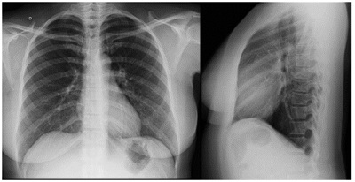

Questão 1 · Medicina Preventiva · 4000194517Gabriel, um trabalhador de 31 anos, procura atendimento médico na Unidade Básica de Saúde (UBS) em que é adscrito em razão de cólicas abdominais intensas iniciadas há 3 dias, associadas à constipação intestinal. Nega comorbidades ou uso de medicações. Ao exame físico, apresenta-se com fácies de dor, corado, hidratado, acianótico e anictérico. Tax. de 38,5°C, FC de 118 bpm, FR = 22 irpm e PA: 164x94 mmHg. Na avaliação da orofaringe, chama atenção a presença de linhas pigmentadas em azul-violáceas na mucosa gengival do paciente. Considerando uma determinada intoxicação por metal pesado como hipótese diagnóstica para o caso, responda: quais são o provável intoxicante e o respectivo local de trabalho onde ele pode ser encontrado?
A Mercúrio, fábrica de lâmpadas fluorescentes.
B Cromo, indústria automotiva.
C Arsênio, frigoríficos.
D Níquel, postos de gasolina.
E Chumbo, indústrias de baterias.
Questão 2 · Medicina de Família e Comunidade · 4000194350Sobre os transtornos mentais, assinale a alternativa ERRADA
A Depressão, estado de stress pós-traumático e transtorno do ciclo vigília-sono estão entre os agravos reconhecidos pelo Ministério da Saúde como potencialmente relacionados ao trabalho.
B Exaustão emocional, despersonalização e redução da realização profissional integram as manifestações clássicas da Síndrome de Burnout.
C Transtornos mentais representam importante causa de afastamento do trabalho pelo Instituto Nacional do Seguro Social (INSS).
D Trabalhadores com diagnóstico de transtorno mental devem ser encaminhados ao INSS para realização de perícia médica após emissão da Comunicação de Acidentes de Trabalho (CAT).
Questão 3 · Prevenção Terciária · 4000190414Um trabalhador sofreu acidente de trânsito, não relacionado ao trabalho, e teve amputada uma de suas pernas. Após passar por reabilitação pro ssional, foi despedido do emprego que possuía e desenvolveu quadro de sofrimento psíquico. Atendido na unidade básica de saúde, foi orientado, dentre outros aspectos, a tentar novo emprego, tirando proveito da reserva legal de vagas para pessoas com de ciência. Segundo o clássico modelo de prevenção apresentado por Leavell e Clark, essa orientação pode ser classificada como
A promoção da saúde.
B prevenção primária.
C prevenção secundária.
D prevenção terciária.
E não sendo uma ação de prevenção.
Questão 4 · Doenças relacionadas ao asbesto Asbestose · 4000190411A asbestose é uma pneumoconiose devido à exposição ocupacional a poeiras de asbesto ou amianto. A medida viável mais eficiente para sua prevenção é
A substituir o amianto por outra substância não tóxica.
B diminuir o tempo de exposição.
C obrigar o uso de equipamentos de proteção individual.
D selecionar apenas trabalhadores não tabagistas.
E realizar exames médicos periódicos para diagnóstico precoce da doença.
Questão 5 · · 4000189315Perda Auditiva induzida por Ruído PAIR ou Perda Auditiva induzida por níveis de Pressão Sonora Elevados PAINPSE A Perda Auditiva Induzida pelo Ruído (PAIR) pode ser conceituada como uma diminuição gradual da acuidade auditiva, decorrente da exposição continuada a níveis elevados de ruído. Sobre esse assunto, é INCORRETO afirmar:
A É sempre neurossensorial, uma vez que a lesão é no órgão de Corti da orelha interna.
B É geralmente bilateral, com padrões similares. Em algumas situações, observam-se diferenças entre os graus de perda das orelhas.
C É irreversível e de cunho profissional.
D A sua progressão não cessa com o fim da exposição ao ruído intenso.
Questão 6 · Princípios e Diretrizes do SUS na Constituição Federal · 4000188217Sílvia é professora da rede municipal de ensino e procurou um Hospital Estadual porque pretendia consultar-se comum médico otorrinolaringologista, uma vez que se encontrava disfônica. Ela não foi atendida no hospital, apesar de haver um setor de otorrinolaringologia. Considerando os princípios e diretrizes do SUS, assinale a alternativa que melhor justi ca o ocorrido:
A Como a professora é servidora municipal deveria ter procurado um hospital municipal ao invés de estadual, respeitando o princípio de regionalização.
B A professora deve procurar a sua Unidade Básica de Saúde para que o médico dessa unidade a avalie e faça o encaminhamento a um otorrinolaringologista, se necessário,respeitando a hierarquização das ações.
C O setor de otorrinolaringologia de um hospital estadual só pode atender casos de alta complexidade, o que não se aplica à professora, segundo o princípio de integralidade.
D A professora deve procurar um Centro de Referência em Saúde do Trabalhador (CRST), a fim de realizar seu exame periódico, respeitando o princípio da descentralização.
E A professora deveria solicitar uma consulta domiciliar à equipe multiprofissional, garantida pelos princípios da integralidade e territorialidade.
Revisar: possível letra faltando em enunciado
Questão 7 · Conceitos gerais · 4000186667Sobre o acidente de trabalho, assinale a alternativa INCORRETA:
A Via de regra, a Comunicação de Acidente de Trabalho (CAT) é emitida pela própria empresa na qual a pessoa acidentada atua.
B O acidente de trajeto é aquele que ocorre durante o percurso residência/local de trabalho/residência, não importando o meio de locomoção utilizado.
C O acidente de trabalho típico é o que ocorre pelo exercício do trabalho, a serviço da empresa, ocasionando lesão corporal ou perturbação funcional.
D No período destinado à refeição ou descanso, no local de trabalho ou durante este horário, a pessoa não será considerada a serviço da empresa, não sendo necessário CAT, caso se acidente.
Questão 8 · Doenças relacionadas ao asbesto Asbestose · Pneumoconiose devida à Poeira de Sílica Silicose · 4000186350Pneumoconioses Analise (V) Verdadeiro ou (F) Falso nas a rmativas abaixo, com relação às doenças pulmonares ocupacionais e ambientais e assinale a opção correta. I- A asbestose é uma doença brosante intersticial difusa dos pulmões e está diretamente relacionada com intensidade e duração da exposição. II- Silicose ainda é uma causa importante de doença pulmonar e está relacionada à exposição ocupacional em plataformas de petróleo. III- As provas de função respiratória (espirometria e capacidade de difusão) são ferramentas iniciais na graduação da incapacidade respiratória. IV- A história do paciente tem importância fundamental para a avaliação da possibilidade de qualquer exposição ocupacional ou ambiental.
A Apenas as afirmativas II e III são verdadeiras.
B Apenas as afirmativas II e IV são verdadeiras.
C Apenas as afirmativas I, III e IV são verdadeiras.
D Apenas as afirmativas II, III e IV são verdadeiras.
E Apenas a afirmativa IV é verdadeira.
Questão 9 · Tratamento do Burnout · Síndrome do Esgotamento Prof issional Burnout · 4000185815Síndrome de Burnout ou Síndrome do Esgotamento Prof issional A síndrome de Burnout é uma grande preocupação para os médicos, trabalhadores e para sociedade em geral. Em relação às intervenções relacionadas à condição, qual das seguintes afirmações é a mais adequada?
A Intervenções educacionais que abordam habilidades de comunicação e autoconfiança reduzem os sintomas da síndrome.
B Intervenções no local de trabalho, abordando padrões de carga de trabalho e turnos com reuniões para aprimorar o trabalho em equipe, reduzem o esgotamento.
C Programas de redução de estresse baseados em mindfulness (atenção plena) reduzem o esgotamento.
D Programas de exercícios incentivados com equipes para melhorar a responsabilidade reduzem o esgotamento.
E Sessões regulares de debriefing em pequenos grupos com exploração de mecanismos de enfrentamento reduzem o esgotamento.
Questão 10 · Medicina Preventiva · 4000185512Com relação à organização da atenção à saúde dos trabalhadores no Brasil é CORRETO afirmar:
A A integralidade na atenção à saúde do trabalhador deve ser garantida por meio de ações de saúde do trabalhador em todos os pontos da Rede de Atenção à Saúde do SUS
B A Rede Nacional de Atenção à Saúde dos Trabalhadores (RENAST) prevê a oferta de ações de saúde do trabalhador apenas dos Centros de Referência em Saúde do Trabalhador (CEREST)
C As ações de saúde do trabalhador implementadas no SUS são custeadas com recursos do Seguro de Acidentes de Trabalho (SAT)
D Cada município brasileiro deve possuir um CEREST
Questão 11 · Política Nacional de Saúde do Trabalhador e da Trabalhadora PNSTT · 4000185372Notif icação em Saúde do Trabalhador no Sistema Nacional de Agravo de Notif icação SINAN Bases legais de Saúde do Trabalhador A secretaria de saúde de um município de 40 mil habitantes detecta aumento de queixas de lombalgia e dores nos braços de mulheres entre 25 a 40 anos de idade, de uma determinada região no segundo semestre de 2017 a 2019 e novamente no mesmo período de 2019 e 2020. Ao investigar os casos, identi ca-se que muitas delas trabalham em uma empresa de confecção de porte médio, cortando tecidos e costurando, e, no segundo semestre, a empresa aumenta muito a produção das roupas para as vendas do final do ano, sem que haja contratações adicionais. Assinale a alternativa correta.
A Mulheres na faixa etária entre 25 e 40 anos costumam ter sobrecarga musculoesquelética por causa dos afazeres domésticos e filhos pequenos e assim, o quadro de dor deve ser decorrente desses aspectos.
B Após avaliação ortopédica, deve ser instituído tratamento medicamentoso, e a secretaria de saúde deve sugerir à empresa que sejam contratados trabalhadores homens para substituir as mulheres.
C A ocorrência de dores musculoesqueléticas se dá quando a empresa não proporciona fisioterapia preventiva.
D A história sugere a ocorrência de distúrbios musculoesqueléticos relacionados ao trabalho, que são de notificação compulsória no Sistema de Informação de Agravos de Notificação (SINAN).
E Mulheres costumam ter distúrbios hormonais que resultam em dores musculoesqueléticas e essa deve ser a primeira hipótese a ser investigada.
Revisar: possível letra faltando em enunciado
Questão 12 · Medicina Preventiva · 4000184753Um trabalhador da Área da Saúde (Enfermeiro) teve sua jornada de trabalho expirada as 18h, quando adentrou em sua motocicleta e se dirigindo para sua residência, lembrou-se de realizar as compras do mês em um supermercado que estava inserido no trajeto, tendo um gasto de aproximadamente 90 minutos para realizá-las, quando então dá início ao retorno para sua residência sofre um acidente projetando-se para o solo e apresentando diversas fraturas de membros superiores, pergunto:
A Caracteriza-se como Acidente de Trabalho de acordo com a Legislação Vigente;
B Caracteriza-se como Acidente de Trânsito de acordo com a Legislação Vigente;
C Não tenho elementos para caracterizar como Acidente de Trabalho ou de Trânsito;
D Tanto pode ser caracterizado como Acidente de Trânsito ou de Trabalho.
Questão 13 · Medicina Preventiva · 4000184752O primeiro Câncer relacionado ao Trabalho descrito pelo Médico inglês Percival Pott, em 1975, em trabalhadores que realizavam limpeza de chaminés na Inglaterra, foi o:
A Câncer de Estômago;
B Câncer de Pulmão;
C Câncer de Fígado;
D Câncer de Escroto.
Questão 14 · Medicina Preventiva · 4000184751São exames complementares obrigatórios a serem realizados em trabalhadores que laborem em empresas de processamento de alimentos, e deverão constar no PCMSO das mesmas:
A Hemograma, Glicemia, Parasitológico e Urina Tipo I;
B Parasitológico, Glicemia, Triglicérides e Urina Tipo I;
C Hemograma, Urina Tipo I, Parasitológico e Cultura de Fezes;
D Eletrocardiograma, Hemograma, Eletro Encefalograma, Urina Tipo I.
Questão 15 · Medicina Preventiva · 4000184750Na ocorrência de Acidente do Trabalho em uma Indústria Metalúrgica teve como consequência óbito do trabalhador: Quais são os procedimentos Legais corretos a serem adotados:
A Reunião da CIPA e Membro do Ministério do Trabalho;
B Reunião da CIPA + Membros do INSS;
C Perícia da Polícia Técnica + Reunião de Emergência da CIPA;
D Reunião da CIPA e Membro do Ministério do Trabalho + Membros do INSS.
Questão 16 · Medicina Preventiva · 4000184749Um trabalhador de 35 anos de idade do setor moveleiro, é acometido de Acidente do Trabalho "gravíssimo", que teve como consequência amputação da mão esquerda e resolveu protocolar uma Ação Indenizatória contra a citada empresa. O Juiz do Trabalho deverá nomear um Perito Médico para avaliar o grau de incapacidade laborativa do empregado acidentado. A Legislação Trabalhista aceita o que segue:
A A empresa (Reclamada) e o trabalhador acidentado (Reclamante) através de assistentes técnicos nomeados, poderão cada um assistir e elaborar Parecer técnico da Perícia;
B A Justiça do Trabalho não aceita que a empresa e o trabalhador nomeiem ao Processo, assistentes técnicos para acompanhar a Perícia a ser realizada pelo Perito do Juízo;
C Somente poderá acompanhar a Perícia Técnica o Perito Médico do juízo e o Advogado da Empresa;
D Somente poderá acompanhar a Perícia Técnica, o Perito Médico do Juízo e o Advogado do trabalhador acidentado.
Questão 17 · Medicina Preventiva · 4000184748A composição da CIPA (Comissão Interna de Prevenção de Acidentes de Trabalho) avalia a responsabilidade do Acidente de Trabalho, é correto afirmar que:
A 50% dos membros nomeados pela empresa 50% eleitos pelos seus pares;
B Os membros eleitos têm estabilidade por 5 anos a contar da posse;
C O presidente é nomeado pelos seus pares trabalhadores;
D A CIPA emite quinzenalmente um relatório sobre todas as ocorrências inclusive Acidentes do Trabalho e Doenças relacionadas ao trabalho no ano. ida oib pr ed
Questão 18 · Medicina Preventiva · 4000184742Paciente masculino, pintor e trabalha em uma metalúrgica onde opera instrumento de pintura a revolver. Segundo o PPRA da empresa, neste setor os trabalhadores estão expostos ao chumbo inorgânico, ruído acima de 85 dB, tolueno e metil-etil- cetona. Como médico do trabalho da empresa, quais exames complementares você solicitaria no exame periódico deste trabalhador, de acordo com o Quadro I da NR-7?
A Plumbemia, ácido delta amino levulínico, audiometria, ácido hipúrico e metil-etilacetona urinária.
B Fenol urinário, metemoglobina, dosagem de chumbo no sangue, zinco protoporfirina, audiometria, dosagem de tolueno no sangue e metil-etil-acetona sanguínea.
C Fenol urinário, metanol urinário, dosagem de ácido hipúrico no sangue, zinco protoporfirina, audiometria, fenol urinário, hemograma, protoparasitológico, urina I e hemograma.
D Raio-X de osso longos para detectar imagens de impregnação pelo chumbo, raio-x de pulmão para avaliar saturnismo, dosagem de chumbo no sangue, audiometria, fenol urinário, urina I, hemograma e metil-etil-acetona urinária e sanguínea.
Questão 19 · Pneumoconioses · Dermatoses Ocupacionais · 4000184605A respeito das queixas ocupacionais, assinale V para as afirmativas verdadeiras e F para as falsas. ( ) As dermatoses ocupacionais são, na sua grande maioria causadas por agentes químicos: "irritantes" ou "alergênicos". ( ) silicose acelerada ou subaguda é uma pneumoconiose não brinogênica que tem início com 9 meses a 1 ano de exposição ocupacional. Decorre da exposição ocupacional a poeiras respiráveis com elevada concentração de sílica cristalina. Como exemplos de ocupações de risco estão cavadores de poços e cortadores de pedras. ( ) São características da PAIR a perda auditiva, os zumbidos, as di culdades no entendimento da fala, os transtornos da comunicação, as alterações do sono e os distúrbios neurológicos e vestibulares. ( ) As dermatoses ocupacionais, a silicose e a PAIR são de noti cação compulsória e na suspeita diagnóstica deve ser aberta uma Comunicação de Acidente de Trabalho (CAT). Assinale a alternativa que apresenta a sequência CORRETA:
A V F V V.
B V F V F.
C F F V F.
D F V F V.
Questão 20 · Medicina Preventiva · 4000184451Maria, de 45 anos de idade, trabalha sob contrato regular, sob a Consolidação das Leis do Trabalho (CLT), há 12 anos. Certo dia, enquanto ia ao trabalho, caminhando, sofreu um acidente automobilístico e sofreu fratura de fíbula esquerda. M aria procurou atendimento na unidade de pronto atendimento mais próxima e foi afastada do trabalho por seis semanas, apresentando recuperação parcial. Teve também indicação de fisioterapia por vinte sessões inicialmente. Nesse caso, o custeio da reabilitação física cabe ao(à)
A empresa empregadora.
B Sistema Único de Saúde (SUS).
C Instituto Nacional do Seguro Social (INSS).
D própria empregada, Maria, com recursos próprios.
E outro envolvido no acidente automobilístico.
Questão 23 · Audiologia · 4000184319Perda Auditiva induzida por Ruído PAIR ou Perda Auditiva induzida por níveis de Pressão Sonora Elevados PAINPSE EM RELAÇÃO À PERDA AUDITIVA INDUZIDA POR RUÍDO, É CORRETO AFIRMAR QUE É:
A Do tipo misto, acometendo a orelha mais exposta, e irreversível.
B Condutiva, unilateral e reversível quando cessada a exposição.
C Do tipo misto, bilateral e reversível quando cessada a exposição.
D Neurossensorial, geralmente bilateral, irreversível e progressiva.
Questão 24 · Doenças relacionadas ao trabalho · Política Nacional de Saúde do Trabalhador e da Trabalhadora PNSTT · 4000184032Saúde do Trabalhador Um grupo de 5 mulheres entre 22 e 28 anos de idade procura uma UBS com queixas relacionadas às condições de trabalho em uma rede de supermercado, onde atuam como caixa. Referem que, frequentemente, nos produtos, há preços divergentes em relação ao código de barras, o que gera insatisfações dos clientes que reclamam com elas. Quando isso acontece, são destratadas na frente de clientes pela gerente, que imputa o problema a um erro das caixas para que a culpa não recaia sobre a empresa. Encontram-se ansiosas e chegam a sonhar com essas situações. Assinale a alternativa correta.
A A equipe de saúde da UBS deve avaliar a saúde das trabalhadoras e, ao mesmo tempo, entrar em contato com a vigilância de saúde para planejar uma ação junto ao supermercado com foco nas relações e condições de trabalho.
B A equipe de saúde da UBS deve solicitar à Prefeitura que faça contato com a auditoria fiscal do trabalho para intervir nas condições de trabalho das funcionárias e solicitar que sejam avaliadas pelo médico da empresa.
C A equipe de saúde da UBS deve solicitar à Prefeitura que faça contato com o setor médico da empresa, para que as trabalhadoras sejam avaliadas e acompanhadas periodicamente.
D A equipe de saúde da UBS deve avaliar a saúde das trabalhadoras e relatar o resultado ao médico da empresa para que planeje uma ação de modo a modificar as relações de trabalho.
Questão 25 · Saúde do Trabalhador · Vigilância Sanitária · 4000184026Cento e doze operários que trabalham em seis construtoras deram entrada no hospital de urgência de uma cidade de grande porte. Os sintomas eram fortes dores no estômago, diarreia e vômito. Os sintomas começaram depois que eles comeram comida, servida nos canteiros de obras, cujo fornecedor é o mesmo para as seis construtoras, e, por isso, suspeita-se de intoxicação alimentar. Ao chegar aos canteiros, a vigilância sanitária não encontrou mais os alimentos fornecidos. Assinale a alternativa correta sobre procedimentos adequados.
A A prefeitura do município deve exigir imediatamente uma declaração de conformidade sobre condições higiênicas por parte da empresa fornecedora.
B A vigilância sanitária do município deve realizar investigação imediata da empresa fornecedora.
C A prefeitura deve comunicar a Secretaria de Estado da Saúde para que envie equipes de reforço para a investigação adequada do caso.
D A prefeitura só pode tomar alguma providência se conseguir comprovar a intoxicação alimentar e, para isso, precisa encontrar o alimento fornecido.
Questão 26 · Medicina Preventiva · 4000183168Homem, 35 anos de idade, foi vítima de acidente no ambiente de trabalho com estilhaço de metal que atingiu e perfurou seu olho direito há seis horas, causando amaurose total à direita. Seus óculos de proteção estavam no bolso do uniforme. Trabalha em uma serralheria que emprega 50 pessoas. Após o atendimento de urgência, qual é a alternativa que indica uma ação de atenção ao trabalhador e a proposta de uma medida de prevenção coletiva mais adequadas a esta situação?
A Emissão de Comunicado de Acidente de Trabalho; verificação do funcionamento da Comissão Interna de Prevenção de Acidentes.
B Encaminhamento para acompanhamento oftalmológico; reorganização do processo de trabalho visando maior margem de manobra.
C Inscrição em programa de treinamento para readaptação funcional; aquisição de Equipamento de Proteção Individual mais efetivo.
D Encaminhamento para Centro de Referência em Saúde do Trabalhador para estabelecer o nexo causal; estudo de ergonomia.
Questão 27 · Medicina Preventiva · 4000182876Os casos de covid-19 que acometeram trabalhadores da saúde na vigência da pandemia envolvem
A aumento de risco associado a longas jornadas de trabalho, privação de sono e problemas no acesso a proteções individuais evoluindo com risco de
B contaminações acontecidas, predominantemente, em interações que não envolviam pacientes justificando que não sejam reconhecidas como relacionadas ao trabalho.
C procedimentos geradores de aerossóis em UTI acometendo a equipe de cuidados mesmo em situação de uso de EPI como máscara N95 e equivalentes.
D contaminações em contexto de transmissão comunitária em situações similares as dos casos que acometeram outras populações trabalhadoras de atividades emergenciais.
Questão 28 · Saúde do Trabalhador · Bases legais de Saúde do Trabalhador · 4000182471Técnicos da vigilância sanitária recebem denúncia de que os trabalhadores de uma empresa estão submetidos a condições de trabalho inadequadas. Após realizarem a inspeção no local de trabalho, a divulgação sobre os riscos laborais identificados que podem causar dano à saúde deve ser feita
A exclusivamente às instâncias da própria vigilância sanitária.
B imediatamente à auditoria fiscal do Ministério do Trabalho.
C apenas à direção da empresa para que as medidas de saneamento sejam tomadas.
D ao Ministério Público do Trabalho, com solicitação de abertura de uma ação civil pública.
E aos trabalhadores e ao seu sindicato
Questão 29 · Notif icação em Saúde do Trabalhador no Sistema da Estratégia de Vigilância Sentinela · 4000181796Lista Nacional de Notif icação Compulsória de doenças agravos e eventos de saúde pública De acordo com a portaria Nº 205, de 17 de fevereiro de 2016, do Ministério da Saúde, um dos agravos que deve ser notificado em Estratégia de Vigilância em Unidades sentinelas é a
A síndrome hemolítica urêmica.
B síndrome congênita associada à infecção pelo vírus Zika.
C intoxicação exógena.
D criptosporidiose.
Questão 30 · Sistema de Inf ormação de Agravos de Notif icação SINAN · 4000181677Intoxicação por Carbamatos e Organof osf orados Paulo, 41 anos, é trabalhador rural e procura atendimento com queixa de sudorese, sialorreia e vômitos. Relata ter trabalhado aplicando Folidol na sua lavoura. Ao exame, apresenta miose e confusão mental. Qual é o provável diagnóstico e o órgão a ser notificado?
A Saturnismo / SINAN.
B Intoxicação por organofosforado / SINASC.
C Intoxicação por organofosforado / SINAN.
D Intoxicação por cromo / SINASC.
E Saturnismo / SISVAN.
Questão 31 · Intoxicação por Metais Pesados · 4000181673L.B.C., 53 anos, sexo feminino, casada, trabalha há anos em fábrica de lâmpadas uorescentes, procura UPA com queixa de fadiga, perda de peso, perda de apetite, sialorreia, afrouxamento dos dentes, irritabilidade e tremores. Diante do exposto, pode-se afirmar que se trata de intoxicação exógena por
A cromo.
B chumbo.
C benzeno.
D solventes orgânicos.
E mercúrio.
Questão 32 · Silicose · Pneumoconiose devida à Poeira de Sílica Silicose · 4000181672M.F.J., 49 anos, procura atendimento por queixa de dispneia progressiva e nega tabagismo. Trabalha em vidraçaria desde os 30 anos de idade. O exame de imagem do tórax apresenta in ltrado micronodular bilateral com predomínio nas zonas pulmonares superiores, poupando os seios costofrênicos. Qual é o diagnóstico mais provável para esse caso?
A DPOC.
B Asbestose.
C Silicose.
D Asma.
E Pneumopatia por berílio.
Questão 33 · Conceitos gerais · 4000181670J.N.S., 37 anos, trabalhador da construção civil, sofreu queda de andaime a 2 metros de altura, resultando em fratura fechada de tíbia direita. Sobre o caso, assinale a alternativa correta.
A Não é considerado acidente de trabalho.
B Trata-se de um acidente de trabalho grave, e a CAT (Comunicação de Acidente de Trabalho) deve ser preenchida em 4 vias.
C Trata-se de um acidente típico, e a CAT deve ser preenchida em 2 vias.
D Trata-se de um acidente de trajeto, e não deve ser preenchida CAT.
E Trata-se de um acidente de trabalho típico, e a CAT é de responsabilidade do médico assistente.
Questão 34 · Medicina Preventiva · 4000181318Uma professora trabalha há 20 anos em duas escolas da rede de ensino fundamental de um município de grande porte. As salas de ambas as escolas têm mais de 40 alunos, sem tratamento acústico e ela tem que falar alto para dar aula. Sente-se sobrecarregada pelas inúmeras atividades além das aulas, desde o preparo até o acompanhamento dos alunos e correção das tarefas e provas. Sente-se sempre devendo alguma coisa para os alunos e para as escolas. Começa a apresentar rouquidão, cansaço e desânimo. Tem o diagnóstico de depressão e distúrbio da voz associado ao desgaste pelo uso excessivo. Com base nesse quadro, é correto afirmar que
A a depressão é comum entre os professores, mas a alteração da voz só é considerada relacionada ao trabalho se houver calo nas cordas vocais.
B ambos os diagnósticos só poderão ser relacionados ao trabalho se forem descartadas quaisquer outras causas.
C ambos os quadros de saúde provavelmente têm relação com aspectos de sua atividade de trabalho.
D a depressão pode ter relação com a atividade de trabalho, mas a alteração da voz não.
E nenhum dos diagnósticos pode ser relacionado ao trabalho, pois são doenças que acometem quaisquer pessoas.
Questão 35 · Política Nacional de Saúde do Trabalhador e da Trabalhadora PNSTT · Saúde do Trabalhador · 4000181220Conceitos gerais A Portaria nº 1.823, de 23 de agosto de 2012, institui a Política Nacional de Saúde do Trabalhador e da Trabalhadora e dispõe sobre a estruturação da Rede Nacional de Atenção Integral à Saúde do Trabalhador (RENAST). Com base nessa portaria e suas atualizações, considere as afirmativas a seguir. I. Os serviços de atenção primária em saúde, urgência e emergência devem realizar a noti cação dos agravos relacionados ao trabalho no Sinan. II. Institui que a atenção primária em saúde deve auxiliar no reconhecimento e identificação dos potenciais riscos e impactos (perfil de morbi-mortalidade) à saúde dos trabalhadores. III. A atenção primária em saúde deve prover atendimento, nos casos pertinentes de agravos relacionados ao trabalho, no entanto, o médico da atenção primária não possui competência para emitir atestados e assinar relatórios sobre o caso. IV. Como forma de promover a articulação das redes de informações sobre agravos relacionados ao trabalho, é obrigatório que as declarações e atestados emitidos possuam o número do código internacional de doenças (CID). Assinale a alternativa correta.
A Somente as afirmativas I e II são corretas.
B Somente as afirmativas I e IV são corretas.
C Somente as afirmativas III e IV são corretas.
D Somente as afirmativas I, II e III são corretas.
E Somente as afirmativas II, III e IV são corretas.
Questão 36 · NR32 Segurança e Saúde no Trabalho em Serviços de Saúde · 4000181219A Norma Regulamentadora 32 (NR-32) tem por nalidade estabelecer as diretrizes básicas para a implementação de medidas de proteção à segurança e à saúde dos trabalhadores dos serviços de saúde, bem como daqueles que exercem atividades de promoção e assistência à saúde em geral. A respeito da NR-32 e suas atualizações, assinale a alternativa correta.
A Em toda ocorrência de acidente envolvendo riscos biológicos, com ou sem afastamento do trabalhador, deve ser emitida a Comunicação de Acidente de Trabalho - CAT.
B O empregador precisa informar aos trabalhadores da área da saúde as vantagens das vacinas contra poliomelite, rubéola e influenza.
C Compete ao Programa de Controle Médico de Saúde Ocupacional (PCMSO) a aplicação de vacinas obrigatórias aos seus trabalhadores, cabendo ao sindicato de trabalhadores o monitoramento do estado vacinal desses trabalhadores.
D Trabalhadoras gestantes não podem trabalhar em áreas com possibilidade de exposição a gases ou vapores anestésicos, como em salas de centro cirúrgico.
E Os documentos que compõem o Programa de Gerenciamento de Riscos deverão ser guardados, em local restrito, sendo disponibilizados aos trabalhadores apenas em situações excepcionais.
Questão 37 · Política Nacional de Saúde do Trabalhador e da Trabalhadora PNSTT · Normas Regulamentadoras · 4000181218Saúde do Trabalhador A saúde do trabalhador é um dos temas que a Lei nº 8.080, de 19 de setembro de 1990, e suas atualizações regulamentam. Com base nos conhecimentos a respeito do tema, considere as afirmativas a seguir. I. A Lei nº 8.080/1990 institui que a elaboração de normas técnicas e o estabelecimento de padrões de qualidade para promoção da saúde do trabalhador são uma atribuição conjunta dos sindicatos patronais das indústrias, pecuária e mineração. II. Entende-se por saúde do trabalhador, para ns dessa lei, um conjunto de atividades que se destina, através das ações de vigilância epidemiológica e vigilância sanitária, à promoção e proteção da saúde dos trabalhadores, assim como visa à recuperação e reabilitação da saúde dos trabalhadores submetidos aos riscos e agravos advindos das condições de trabalho. 26 / 27 III. Institui a saúde do trabalhador como um dos objetivos do Sistema Único de Saúde, abrangendo a participação na normatização, fiscalização e controle dos serviços de saúde do trabalhador nas instituições e empresas públicas e privadas. IV. Institui que a articulação das políticas e programas, a cargo das comissões intersetoriais, abrangerá, em especial, as seguintes atividades: alimentação e nutrição, saneamento e meio ambiente, vigilância sanitária e farmacoepidemiologia, recursos humanos, ciência e tecnologia e saúde do trabalhador. Assinale a alternativa correta.
A Somente as afirmativas I e II são corretas.
B Somente as afirmativas I e IV são corretas.
C Somente as afirmativas III e IV são corretas.
D Somente as afirmativas I, II e III são corretas.
E Somente as afirmativas II, III e IV são corretas.
Questão 38 · Política Nacional de Saúde do Trabalhador e da Trabalhadora PNSTT · Normas Regulamentadoras · 4000181217Saúde do Trabalhador A Reforma Trabalhista e a Lei das Terceirizações, ambas aprovadas em 2017, homologaram a terceirização para atividades nalísticas, de caráter temporário e emergencial. No campo da saúde, essas normativas acentuaram a contratação de pessoas físicas constituídas por meio de pessoas jurídicas especialmente para esse m, processo chamado de “pejotização”. (...) O pro ssional, ao constituir-se como pessoa jurídica, passa a assumir, além das atribuições do exercício da função, os impostos e outras despesas da “empresa” que “administra”, como o recolhimento de taxas das notas scais, entre outros encargos. E ainda receberá por hora trabalhada, sem direito a benefícios, como férias, 13º salário, licenças médicas, e somente terá direito à proteção social mediante sua própria contribuição à previdência e após decorridos prazos de carência. Esses aspectos podem apresentar-se vantajosos para os tomadores ou contratantes, pela desoneração da folha de pagamento e também pela agilidade com que se realiza o provimento, razões essas que contribuem para a permanência dessa prática. (...) Esses resultados indicam para a precarização da força de trabalho nas quatro dimensões estabelecidas pela Organização Internacional do Trabalho: i) a dimensão temporal, quanto à possibilidade da perda de vínculo do pro ssional a qualquer momento; ii) dimensão organizacional, quando o trabalhador não domina ou controla as condições de trabalho individuais ou coletivas; iii) dimensão econômica, devido aos baixos salários contratualizados; e iv) dimensão social, na perspectiva da ausência de benefícios previdenciários, desproteção jurídica e inseguridade social. (SILVA, J. F. M.; CARVALHO, B. G.; SANTINI, S. M. L. A pejotização em saúde na macrorregião norte do Paraná e suas implicações com a COVID-19. Revista Eletrônica Gestão & Saúde, v.11. n.3. 2020. Disponível em: <https://doi.org/10.26512/gs.v11i3.32400>.) O texto discorre sobre diversas questões que podem indicar a precarização da força de trabalho em saúde. Com base nesse tema e em relação ao contexto da pandemia de Covid-19, considere as afirmativas a seguir. I. A portaria do Ministério da Saúde nº 2.345, de 2 de setembro de 2020, incluiu a doença causada pelo coronavírus SARS- CoV-2 (Covid-19) na Lista de Doenças Relacionadas ao Trabalho para pro ssionais de saúde, garantindo respaldo para o recebimento de direitos trabalhistas e afastamento, inclusive para trabalhadores terceirizados. II. O anexo LXXX da Portaria de Consolidação nº 5/GM/MS, de 28 de setembro de 2017, institui que qualquer infecção adquirida em ambiente pro ssional é uma doença relacionada ao trabalho, sendo este um direito inalienável do trabalhador, independentemente do local de trabalho, forma de vínculo ou nexo causal entre a exposição do agente causal no ambiente de trabalho. III. Embora o Ministério da Saúde tenha reconhecido a doença causada pelo coronavírus SARS-CoV-2 (Covid-19) como uma doença relacionada ao trabalho, esse reconhecimento foi revogado poucos dias depois, por meio da portaria do Ministério da Saúde nº 2.345, de 2 de setembro de 2020, não gerando respaldo legal aos trabalhadores de saúde que porventura se contaminassem com esse vírus no desempenho profissional. IV. A ausência de benefícios previdenciários, como apontado pelo texto, pode constituir um elemento de precarização da saúde do trabalhador da saúde terceirizado, em especial durante a pandemia de Covid-19, ocasião na qual muitos trabalhadores terceirizados possuíam receio de testar positivo para o SARS-CoV-2 e terem que se afastar do trabalho, gerando perda na sua renda. Assinale a alternativa correta.
A Somente as afirmativas I e II são corretas.
B Somente as afirmativas I e IV são corretas.
C Somente as afirmativas III e IV são corretas.
D Somente as afirmativas I, II e III são corretas.
E Somente as afirmativas II, III e IV são corretas.
Questão 39 · Política Nacional de Saúde do Trabalhador e da Trabalhadora PNSTT · 4000181216A Reforma Trabalhista e a Lei das Terceirizações, ambas aprovadas em 2017, homologaram a terceirização para atividades nalísticas, de caráter temporário e emergencial. No campo da saúde, essas normativas acentuaram a contratação de pessoas físicas constituídas por meio de pessoas jurídicas especialmente para esse m, processo chamado de “pejotização”. (...) O pro ssional, ao constituir-se como pessoa jurídica, passa a assumir, além das atribuições do exercício da função, os impostos e outras despesas da “empresa” que “administra”, como o recolhimento de taxas das notas scais, entre outros encargos. E ainda receberá por hora trabalhada, sem direito a benefícios, como férias, 13º salário, licenças médicas, e somente terá direito à proteção social mediante sua própria contribuição à previdência e após decorridos prazos de carência. Esses aspectos podem apresentar-se vantajosos para os tomadores ou contratantes, pela desoneração da folha de pagamento e também pela agilidade com que se realiza o provimento, razões essas que contribuem para a permanência dessa prática. (...) Esses resultados indicam para a precarização da força de trabalho nas quatro dimensões estabelecidas pela Organização Internacional do Trabalho: i) a dimensão temporal, quanto à possibilidade da perda de vínculo do pro ssional a qualquer momento; ii) dimensão organizacional, quando o trabalhador não domina ou controla as condições de trabalho individuais ou coletivas; iii) dimensão econômica, devido aos baixos salários contratualizados; e iv) dimensão social, na perspectiva da ausência de benefícios previdenciários, desproteção jurídica e inseguridade social. (SILVA, J. F. M.; CARVALHO, B. G.; SANTINI, S. M. L. A pejotização em saúde na macrorregião norte do Paraná e suas implic aç õ e s com a COVID-19. Revista Eletrônica Gestão & Saúde, v.11. n.3. 2020. Disponível em: <https://doi.org/10.26512/gs.v11i3.32400>.) Os autores desse texto realizam a descrição do processo de “pejotização” e seus possíveis impactos para a saúde dos trabalhadores. A “pejotização” encontra espaço legal por meio da forma como o tema é apresentado na Constituição Federal de 1988. Com base nesses conhecimentos, assinale a alternativa que indica, corretamente, o trecho constitucional que cursa sobre a saúde do trabalhador.
A Na seção dos direitos sociais, Art. 7, “São direitos dos trabalhadores urbanos e rurais (...) atendimento à saúde, ofertado pelo empregador, mesmo em modalidades de contratação indireta”.
B Na seção da previdência social, Art. 160, “A previdência social (...) tem como pressuposto, na forma da lei, o (...) atendimento à saúde do trabalhador em todas as esferas de exercício laboral legal”.
C Na seção da saúde, Art. 200, “Ao sistema único de saúde compete, além de outras atribuições, nos termos da lei (...), executar as ações de vigilância sanitária e epidemiológica, bem como as de saúde do trabalhador”.
D Na seção da previdência social, Art. 201, “A previdência social (...) atenderá, na forma da lei , a (...) proteção à saúde do trabalhador em situação de vínculo terceirizado”.
E Na seção da assistência social, Art. 203, “A assistência social será prestada a quem dela necessitar, independentemente de contribuição à seguridade social, e tem por objetivos (...) a promoção da saúde do trabalhador”.
Questão 40 · Doenças relacionadas ao trabalho · 4000176029Perda Auditiva induzida por Ruído PAIR ou Perda Auditiva induzida por níveis de Pressão Sonora Elevados PAINPSE Sobre a Perda Auditiva Induzida por Ruído (PAIR), uma diminuição gradual da acuidade auditiva decorrente da exposição contínua a níveis elevados de ruídos, assinale alternativa INCORRETA:
A É sempre neurossensorial
B Diabetes diminui a chance da doença
C É sempre irreversível, geralmente bilateral
D Cessada a exposição, é passível de não progressão
Questão 41 · Saúde do Trabalhador · Vigilância Ambiental · Vigilância Epidemiológica · 4000175600Associe as duas colunas, relacionando o conceito adequado a cada item: 1) Vigilância Sanitária. 2) Vigilância Epidemiológica. 3) Saúde do Trabalhador. 4) Principio da Universalidade. 5) Principio da equidade. ( ) Todo cidadão tem direito à saúde e acesso a todos os serviços públicos de saúde. ( ) É um conjunto de ações capaz de eliminar, diminuir ou prevenir riscos à saúde e de intervir nos problemas sanitários decorrentes do meio ambiente, da produção e circulação de bens e da prestação de serviços de interesse da saúde. ( ) É um conjunto de ações que proporcionam o conhecimento, a detecção ou prevenção de qualquer mudança nos fatores determinantes e condicionantes de saúde individual ou coletiva, com a nalidade de recomendar e adotar as medidas de prevenção e controle das doenças ou agravos. ( ) É um conjunto de atividades que se destina, através das ações de vigilância epidemiológica e vigilância sanitária, à promoção e proteção da saúde dos trabalhadores, assim como visa à recuperação e reabilitação da saúde dos trabalhadores submetidos aos riscos e agravos advindos das condições de trabalho. ( ) É o atendimento aos indivíduos de acordo com suas necessidades, oferecendo mais a quem mais precisa e menos a quem requer menos cuidados, reconhecendo as diferenças nas condições de vida e saúde e nas necessidades das pessoas, considerando que o direito à saúde passa pelas diferenciações sociais e deve atender a diversidade. A sequência CORRETA é:
A 1, 2, 3, 4, 5.
B 2, 1, 4, 5, 3.
C 5, 4, 3, 2, 1.
D 3, 2, 1, 4, 5.
E 4, 1, 2, 3, 5. ida oib pr ed
Questão 42 · Pneumoconioses · 4000175571É um exemplo de pneumoconiose:
A carbamatose.
B antimoniose.
C piretroidose.
D saturniose.
Questão 43 · COVID 19 · NR6 Equipamento de Proteção Individual · 4000174834Segundo o Ministério da Saúde, a utilização de Equipamentos de Proteção Individual (EPI) pelos trabalhadores de saúde envolvidos na Campanha Nacional de Vacinação contra a Covid-19 tem como objetivo a proteção destes trabalhadores, bem como a segurança dos indivíduos que serão atendidos para a vacinação. Nesse sentido, sobre as orientações de uso do EPI, numerar a 2ºcoluna de acordo com a 1º e, após, assinalar a alternativa que apresenta a sequência CORRETA: (1) EPI obrigatório durante a rotina de vacinação. (2) EPI recomendado durante a rotina de vacinação. (3) EPI com possibilidade de uso eventual (somente para situações específicas) durante a rotina de vacinação. ( ) Proteção ocular. ( ) Máscara cirúrgica. ( ) Luvas.
A 1 - 2 - 3.
B 2 - 1 - 3.
C 2 - 3 - 1.
D 3 - 1 - 2.
E 3 - 2 - 1.
Questão 44 · NR9 Avaliação e Controle das Exposições Ocupacionais a Agentes Físicos Químicos e Biológicos · 4000174833De acordo com os Riscos Biológicos Guia Técnico, sobre as diretrizes elaboradas pela Comissão de Biossegurança em Saúde/Ministério da Saúde/CBS, analisar os itens abaixo: I . De nem apenas os requisitos máximos necessários ao trabalho seguro com material biológico em ambiente de contenção.; II. Aplicam se à execução dos procedimentos de segurança em contenção em laboratório, na manipulação de materiais biológicos que contenham ou possam conter agentes biológicos com potencial patogênico.; III. Aplicam-se ao trabalho em contenção que utilize materiais biológicos, dependendo do volume a ser manipulado. Está(ão) CORRETO(S):
A Somente o item I.
B Somente o item II.
C Somente os itens I e III.
D Somente os itens II e III.
E Todos os itens.
Questão 45 · NR32 Segurança e Saúde no Trabalho em Serviços de Saúde · 4000174832De acordo com a NR 32 - Segurança e Saúde no Trabalho em Serviços de Saúde, sobre o Programa de Prevenção de Riscos Ambientais (PPRA), analisar os itens abaixo: I. O PPRA deve conter, na fase de reconhecimento, avaliação do local de trabalho e do trabalhador, considerando a finalidade e a descrição do local de trabalho. II. O PPRA deve ser reavaliado uma vez a cada dois anos e quando a análise dos acidentes e incidentes assim o determinar. III. Os documentos que compõem o PPRA deverão estar disponíveis aos trabalhadores. Está(ão) CORRETO(S):
A Somente o item II.
B Somente os itens I e II.
C Somente os itens I e III.
D Somente os itens II e III.
E Todos os itens.
Questão 46 · Política Nacional de Práticas Integrativas e Complementares · Saúde do Trabalhador · 4000171107Vigilância Sanitária Em relação aos objetivos e atribuições do Sistema Único de Saúde (SUS), quais das a rmativas a seguir fazem parte do seu campo de atuação? 1. A assistência terapêutica integral. 2. A fiscalização e a inspeção de alimentos, água e bebidas para consumo humano. 3. A assistência ao trabalhador vítima de acidentes de trabalho ou portador da doença profissional e do trabalho.
A Somente 1 está correta.
B Somente 1 e 2 estão corretas.
C Somente 1 e 3 estão corretas.
D Somente 2 e 3 estão corretas.
E 1, 2 e 3 estão corretas.
Questão 47 · Política Nacional de Saúde do Trabalhador e da Trabalhadora PNSTT · 4000170511Bases legais de Saúde do Trabalhador Sobre a saúde do trabalhador, assinale a alternativa CORRETA:
A A forma de inserção das pessoas nos espaços de trabalho contribui decisivamente para o processo saúde- doença do trabalhador.
B A saúde do trabalhador é de responsabilidade do Ministério do Trabalho e Emprego.
C A saúde do trabalhador visa compreender a infraestrutura do local de trabalho e o processo de adoecimento do trabalhador.
D A saúde do trabalhador é de responsabilidade dos médicos junto com os sindicatos patronais.
Questão 48 · Política Nacional de Saúde do Trabalhador e da Trabalhadora PNSTT · Saúde do Trabalhador · 4000170401Acidente de trabalho Sobre a saúde do trabalhador, assinale a alternativa CORRETA.
A As ações de saúde devem pautar-se na identificação de riscos, danos, necessidades, condições de vida e de trabalho e ações corretivas imediatas que determinam as formas de adoecer e morrer dos grupos populacionais.
B Aspectos demográficos, culturais, políticos, socioeconômicos, epidemiológicos e sanitários devem ser buscados, visando à priorização de problemas de grupos populacionais inseridos em determinada realidade territorial. As ações devem girar em torno do eixo informação - decisão - ação.
C As ações de saúde do trabalhador não devem ser incluídas formalmente na agenda da rede básica de atenção à saúde, pois, dessa forma, ocorre uma sobrecarga na assistência à população.
D A CAT (Comunicação de acidente de trabalho) deve ser emitida apenas nos acidentes graves, quando há a necessidade de afastamento do trabalho por período superior a 15 dias; para efeito de vigilância epidemiológica e sanitária, o agravo deve ser devidamente registrado.
Questão 49 · Princípios e Diretrizes do SUS na Lei n 80801990 · Bases legais de Saúde do Trabalhador · 4000169984Ainda de acordo com a lei referida na questão anterior, entende-se por saúde do trabalhador um conjunto de atividades que se destina à promoção e à proteção da saúde dos trabalhadores, abrangendo, dentre outras,
A a assistência ao trabalhador, exclusivamente com relação às doenças profissionais e do trabalho.
B a participação, no âmbito dos diferentes ministérios, em estudos, pesquisas, avaliação e controle dos riscos e agravos potenciais à saúde existentes no processo de trabalho.
C o fornecimento de informação ao trabalhador e à sua respectiva entidade sindical sobre os resultados de fiscalizações, avaliações ambientais e exames de saúde, de admissão, periódicos e de demissão, respeitados os preceitos da ética profissional.
D a revisão periódica da listagem oficial de doenças originadas no processo de trabalho, tendo na sua elaboração a colaboração das entidades acadêmicas de ensino e pesquisa.
E a elaboração de normas regulamentadoras de medicina e segurança do trabalho (NR) a serem fiscalizadas pela auditoria fiscal do trabalho.
Questão 50 · Comunicação de Acidente de Trabalho CAT · Prof ilaxia pósexposição PEP · 4000169631NR9 Avaliação e Controle das Exposições Ocupacionais a Agentes Físicos Químicos e Biológicos Você, médico de saúde da família de uma pequena cidade no interior, recebe em seu consultório o técnico de enfermagem da UBS em que trabalha, a rmando que há cerca de 30 minutos sofreu ferimento perfurocortante no dedo da mão esquerda enquanto coletava sangue para exames de um paciente na UBS. O pro ssional exposto realizou o teste rápido para HIV, que veio negativo, mas o paciente se recusou a realizar o mesmo teste e foi embora. Não há na cidade, ou em municípios próximos, serviço de infectologia de referência. Quanto á profilaxia para HIV no caso em questão, qual deve ser a conduta nesse momento?
A Indicar profilaxia pós-exposição para HIV, notificar acidente de trabalho com exposição a material biológico e realizar posterior acompanhamento sorológico e laboratorial do profissional.
B Solicitar a busca ativa e realização compulsória de teste rápido do paciente, por ser indispensável à conduta e, caso o teste seja positivo, indicar profilaxia pós-exposição para HIV; notificar acidente de trabalho com exposição a material biológico e realizar posterior acompanhamento sorológico e laboratorial do profissional.
C Aguardar 72h após exposição e realizar novo teste rápido no profissional. Caso seja negativo novamente, indicar profilaxia pós-exposição para HIV, notificar acidente de trabalho com exposição a material biológico e realizar posterior acompanhamento sorológico e laboratorial do profissional.
D Aguardar 72h após exposição e realizar novo teste rápido no profissional. Caso seja positivo, indicar profilaxia pós-exposição para HIV, notificar acidente de trabalho com exposição a material biológico e realizar posterior acompanhamento sorológico e laboratorial do profissional.
E Indicar profilaxia pós-exposição para HIV, mas não se deve notificar acidente de trabalho com exposição a material biológico para preservar o sigilo do paciente, realizando posteriormente acompanhamento sorológico e laboratorial do profissional.
Questão 51 · Doenças relacionadas ao trabalho · Medicina Preventiva · 4000169258Paciente masculino, operador de sistema de reversão do setor de coqueria da Siderurgia Aços AS há 10 anos. No exercício de suas funções opera o sistema de válvulas de gás e de ar nos fornos da coqueria, abastece e descarrega os fornos, manejando um carro de enfornamento e de desenfornamento. Nesta atividade, segundo o Programa de Prevenção de Riscos Ambientais(PPRA) da empresa há exposição ao benzeno, ao xileno, ao lolueno e ao ruido acima de 85 dB. Como médico do trabalho da empresa, quais exames complementares você solicitaria no exame periódico deste trabalhador, de acordo com o Quadro I da NR 7 - programa de controle médico de saúde ocupacional?
A Fenol urinário, urina I, hemograma e audiometria.
B Fenol urinário, metahemoglobina. Ácido hipúrico e audiometria.
C Hemograma, ácido metil-hipúrico urinário, ácido hipúrico urinário e audiometria.
D Fenol urinário, metanol urinário, dosagem de ácido hipúrico no sangue e audiometria.
Questão 52 · Doenças relacionadas ao trabalho · 4000169162Sobre as doenças ocupacionais é correto afirmar:
A O paciente com bissinose ou asma ocupacional pode apresentar diminuição dos sintomas com a exposição de longo tempo. Nessas doenças os sintomas desaparecem nos finais de semana ou férias do trabalhador corroborando para o diagnóstico de doença relacionada ao trabalho.
B A silicose pode acometer indivíduos que atuam em atividades com jateamento de areia, extração e beneficiamento de rochas, mineração e perfuração de poços. Faz parte das doenças do grupo I de Schilling já que o trabalho é causa estritamente necessária para o adoecimento.
C A perda auditiva por ruído pode ser reversível e a audiometria pode revelar um componente de assimetria.
D No saturnismo as principais vias de absorção do agente causal é a digestiva e inalatória e acomete principalmente trabalhadores de garimpos, indústria eletrônica e fabricação de agentes polímeros. Clinicamente o paciente pode apresentar irritação de pele e acometimento de pulmões.
E No hidrargirismo as linhas de Burton correspondem a acúmulo de chumbo na base dos dentes.
Questão 53 · Conceitos gerais · 4000169134Saúde do Trabalhador é o campo da Saúde Pública que tem como objeto de estudo e intervenção as relações produção- consumo e o processo saúde-doença das pessoas e, em particular, dos(as) trabalhadores(as). Assinale alternativa correta dentre as citadas abaixo.
A A emissão da Comunicação de Acidente de Trabalho é de responsabilidade da empresa contratante, mas também pode ser feita pelos profissionais dos serviços de saúde, pelo sindicato da categoria, pelo(a) próprio(a) trabalhador(a) ou familiar.
B Nos casos de silicose, doença coronariana, asma, perda auditiva por ruído e varizes dos membros inferiores tem- se o trabalho como agente provocador de distúrbio latente, ou agravador de doença já estabelecida.
C A inalação de poeira contendo sílica pode causar várias doenças São doenças inevitáveis, porém reversíveis, com tratamento específico.
D Acidentes de Trajeto é quando o acidente resulta em óbito imediatamente ou até 12 horas após sua ocorrência.
E Acidente de trabalho fatal são aqueles que ocorrem no percurso da residência para o local de trabalho ou deste para aquela, qualquer que seja o meio de locomoção
Questão 54 · Política Nacional de Saúde do Trabalhador e da Trabalhadora PNSTT · Saúde do Trabalhador · 4000168762Bases legais de Saúde do Trabalhador Em setembro de 2021 médico de Saúde da Família confirmou gravidez em técnica de enfermagem que trabalha na unidade de terapia intensiva do hospital do município, o qual constitui unidade de saúde que atende pacientes suspeitos ou confirmados de COVID 19. O médico faz-lhe algumas recomendações e, a seu pedido, elaborou relatório a ser entregue no serviço de medicina do trabalho do hospital Considerando, à época do diagnóstico, o estado de emergência pela pandemia pela COVID 19 e a legislação vigente, qual conduta do empregador era MAIS ADEQUADA?
A solicitar o afastamento imediato da gestante do trabalho presencial no hospital
B restringir as atividades a serem exercidas pela gestante no interior da unidade de terapia intensiva
C encaminhar a gestante para o INSS com solicitação de afastamento do trabalho em gozo de auxilio incapacidade temporária
D remanejar a gestante para outra unidade do hospital onde não sejam atendidos pacientes com suspeita de COVID 19
Questão 55 · Saúde do Trabalhador · Acidente de trabalho · 4000168761As nanopartículas medem menos de um centésimo de bilionésimo de metro e são regidas por leis físicas diferentes daquelas bem conhecidas pela ciência. Existem probabilidades de que apresentem maior grau de toxicidade do que as partículas em tamanhos maiores, podendo ocasionar danos futuros, ainda não plenamente conhecidos, aos pesquisadores, trabalhadores e consumidores. A prevenção de possíveis agravos à saúde dos trabalhadores expostos a nanopartículas nos ambientes de trabalho deve se orientar pelo princípio:
A da Precaução
B do Controle Social
C da Integração Intrainstitucional
D da Responsabilidade Sanitária
Questão 56 · Bases legais de Saúde do Trabalhador · 4000168760AFR 50 anos, trabalha como torneiro mecânico com carteira assinada e sofreu atropelamento por automóvel quando retornava do trabalho para casa, de bicicleta, sofrendo fratura de clavícula direita. AFR foi assistido em unidade de Pronto Socorro de sua cidade e foi afastado do trabalho com recomendação de manter a imobilização do braço direito por cinco semanas, após as quais deverá fazer reabilitação física ( sioterapia). Considerando as circunstâncias do acidente e a legislação em vigor, o custeio de reabilitação física cabe ao:
A INSS
B empregador
C SUS
D motorista responsável pelo atropelamento
Questão 57 · Doenças relacionadas ao trabalho · Medicina Preventiva · 4000168759Visando estabelecer uma relação de causa o efeito entre as doenças e trabalho, o médico inglês Richard Schilling criou em 1984 a classificação que cou conhecida como "Classi cação de Schilling", a qual resume e exempli ca os grupos das doenças relacionadas ao trabalho. Nos termos desta classificação, em qual dos grupos abaixo estão incluídas as doenças comuns que são mais frequentes ou mais precoces em determinados grupos ocupacionais e para as quais o nexo causal é de natureza eminentemente epidemiológica?
A Doenças em que o trabalho é causa necessária
B Doenças em que o trabalho pode ser um fator de risco, contributivo, mas não necessário.
C Doenças em que o trabalho é agravador de doença preexistente, ou seja, concausa
D Doenças para as quais o trabalho é causa necessária e são agravadas por patologias preexistentes
Revisar: possível letra faltando em enunciado
Questão 58 · Medicina Preventiva · Saúde do Trabalhador · 4000168758A ocorrência de um acidente de trabalho com um empregado exige do seu empregador a emissão da Comunicação de Acidente de Trabalho (CAT). Dentre as opções abaixo, qual delas é um desdobramento administrativo da emissão da CAT nos casos de agravos relacionados ao trabalho que exigem afastamento do trabalho par mais de 15 dias:
A Estabilidade provisória ao trabalhador a qual perdura por 24 meses após a cessação do auxilio incapacidade temporária
B Necessidade de depósito do Fundo de Garantia por Tempo de Serviço (FGTS) para o trabalhador acidentado
C Redução da base de cálculo do Fator Acidentário Previdenciário (FAP)
D Abertura de ação regressiva contra a empresa para Trabalho ressarcimento de despesas trabalhistas do Ministério do Trabalho
Questão 59 · · 4000168385Perda Auditiva induzida por Ruído PAIR ou Perda Auditiva induzida por níveis de Pressão Sonora Elevados PAINPSE Assinale a assertiva correta sobre perda auditiva induzida por ruído (PAIR).
A Pode ser neurossensorial ou de condução.
B É uma perda auditiva irreversível e, geralmente, unilateral.
C Há progressão constante da perda auditiva, mesmo cessando a exposição ao ruído.
D O portador de PAIR pode queixar-se de zumbidos e desenvolver intolerância a sons intensos.
Questão 60 · Síndrome de Burnout ou Síndrome do Esgotamento Prof issional · 4000168248Sobre as doenças ocupacionais, a afirmativa correta é:
A A Silicose é classificada como acidente típico.
B Comunicação de Acidente de Trabalho (CAT) deve ser emitida apenas nos casos de acidentes típicos.
C A Perda Auditiva Induzida por Ruídos (PAIR) é classificada como uma doença profissional.
D Bissinose é a doença causada pela exposição ao berílio.
E A Síndrome de
Questão 61 · Benef ícios Previdenciários · Segurados · 4000168065Qual foi o grande avanço que o Sistema Único de Saúde (SUS) proporcionou em relação aos programas anteriormente realizados pelo Instituto Nacional de Assistência Médica da Previdência Social (INAMPS)?
A Aquisição de novos equipamentos e implantação de sistemas de informação.
B Incorporou os trabalhadores rurais que até então não estavam contemplados.
C Ampliou a participação do INSS na contratualização da rede contratada pelo SUS.
D Excluiu a prestação privada e ampliou a capacidade instalada pública de oferta de serviços.
E Universalizou a assistência médica que até então beneficiava apenas os trabalhadores da economia formal e seus dependentes.
Questão 62 · NR15 Atividades e Operações Insalubres · 4000167707Quanto aos riscos ocupacionais que podem extrapolar o ambiente de trabalho e atingir a comunidade, julgue o item. Uma situação de especial importância refere-se a crianças e adolescentes com menos de 16 anos de idade em situação de trabalho, o que é considerado ilegal, ressalvada a condição de aprendiz a partir dos 14 anos de idade, e também quanto a pessoas com menos de 18 anos de idade realizando trabalho noturno, perigoso ou insalubre, também ilegal, ainda que desenvolvido no contexto familiar.
A Certo.
B Errado.
Questão 63 · Saúde do Trabalhador · 4000167705Quanto aos riscos ocupacionais que podem extrapolar o ambiente de trabalho e atingir a comunidade, julgue o item. A presença de uma fábrica de cimento em um território próximo aos locais de moradia das pessoas acarreta outros tipos de riscos à população, além da exposição a aerodispersíveis.
A Certo.
B Errado.
Questão 64 · Saúde do Trabalhador · 4000167704Quanto aos riscos ocupacionais que podem extrapolar o ambiente de trabalho e atingir a comunidade, julgue o item. No acidente radioativo de Goiânia, a radiação ionizante liberada pelo Césio 137 causou efeitos determinísticos nas pessoas que vieram a contrair câncer e efeitos estocásticos naquelas que foram a óbito pouco tempo depois da exposição.
A Certo.
B Errado.
Questão 65 · Riscos Ocupacionais · 4000167703NR9 Avaliação e Controle das Exposições Ocupacionais a Agentes Físicos Químicos e Biológicos NR1 Disposições gerais e gerenciamento de riscos ocupacionais Quanto aos riscos ocupacionais que podem extrapolar o ambiente de trabalho e atingir a comunidade, julgue o item. Na tragédia da boate Kiss, as mortes das pessoas presentes no local foram causadas pela combinação sinérgica de dois gases da combustão de materiais e que atuam ligando-se fortemente à hemoglobina: o monóxido de carbono e o benzeno.
A Certo.
B Errado.
Questão 66 · A carga de doenças no Brasil tripla carga de doenças · 4000167568As projeções populacionais citam o envelhecimento demográ co brasileiro crescente desa ando as políticas sociais atuais e os pro ssionais de saúde, principalmente sobre as doenças crônico degenerativas. Em relação à avaliação da pessoa idosa, é correto afirmar:
A Hoje as quedas em idosos são infrequentes devido às constantes medidas preventivas.
B É necessária durante a abordagem ao idoso, a aplicação de um instrumento de avaliação multidimensional.
C Os idosos não respondem positivamente às medidas de prevenção, tornando-se difícil o manejo.
D No cuidado do idoso com múltiplas comorbidades, e
E Um indicador sensível de diminuição das funções cognitivas é a perda da independência.
Revisar: possível letra faltando em enunciado
Questão 68 · Saúde do Trabalhador · 4000167408A anamnese ocupacional é importante para identificar os fatores de risco ocupacionais associados a determinadas doenças ou agravos. A ALTERNATIVA QUE CARACTERIZA ESTA ASSOCIAÇÃO É:
A Soldador e glaucoma.
B Pedreiro e dermatite de contato.
C Montador de bateria de veículos e intoxicação por mercúrio.
D Marceneiro e silicose.
Questão 69 · Tenossinovite do Estilóide Radial De Quervain · Tenossinovite de De Quervain · 4000166843Mulher de 35 anos, exercendo a pro ssão de cozinheira, queixa-se de dor no punho direito, de início há duas semanas. Ao exame físico osteoarticular, apresenta dor intensa à palpação no nível da apó se estiloide do rádio direito, e dor à manobra de adução forçada com a mão fechada. Considerando-se a principal hipótese diagnóstica para o caso, a manobra descrita denomina-se:
A Finkelstein.
B Trendelenburg.
C Cozen.
D Yocum.
Questão 70 · Pneumoconiose devida à Poeira de Sílica Silicose · 4000166626Doenças osteomusculares relacionadas ao trabalho DORT Lesão por esf orços repetitivos LER Perda Auditiva induzida por Ruído PAIR ou Perda Auditiva induzida por níveis de Pressão Sonora Elevados PAINPSE A respeito das queixas ocupacionais, assinale a alternativa incorreta.
A As LER/Dort possuem etiologia multifatorial complexa. Resultam do desequilíbrio entre as exigências das tarefas realizadas no trabalho e as capacidades funcionais individuais que geram sobrecarga osteomuscular.
B As dermatoses ocupacionais são determinadas pela interação de dois grupos de fatores: os predisponentes e as causas diretas. A maioria é causada por agentes químicos “irritantes” ou “alergênicos”.
C A silicose é uma pneumoconiose não fibrinogênica que pode se apresentar nas formas crônica (menos de um ano de evolução), acelerada ou subaguda (início até nove meses a um ano de exposição ocupacional) e aguda (geralmente início até seis meses de exposição, devido à exposição a grandes quantidades de poeiras de sílica recém-fraturadas, caracterizada por um dano alveolar difuso e exsudação de material eosinofílico lipoproteináceo no espaço aéreo e na inflamação intersticial).
D As principais queixas auditivas estão relacionadas a riscos físicos (ruído e pressão) e químicos. O ruído, quando exposição > 85 db e > 8 horas por dia, pode levar à perda auditiva induzida pelo ruído (PAIR), de notificação compulsória. O trabalhador apresenta dificuldade para escutar a própria voz e compreender as palavras em ambientes com muitos ruídos.
Questão 71 · Conceitos gerais · 4000166625A respeito dos acidentes de trabalho (AT), assinale a alternativa correta.
A São considerados AT apenas os acidentes ocorridos com os trabalhadores do mercado formal do trabalho.
B O AT é considerado fatal quando ocorre a morte imediata ou até 48 horas após o acidente.
C Se um motorista de caminhão sofre um acidente de trânsito durante o seu trabalho, esse acidente é considerado um acidente de trajeto.
D AT graves são os que resultam em morte ou em mutilações ou os que acontecem com menores de 18 anos de idade.
Questão 72 · Dermatoses Ocupacionais · 4000166390Sobre as dermatoses ocupacionais, de acordo com o Ministério da Saúde,
A algumas das profissões mais afetadas pela ação da luz ultravioleta são agricultores, pescadores, trabalhadores na construção civil, soldadores (solda elétrica) e trabalhadores em plataformas submarinas.
B sua prevalência é de fácil avaliação, pois a maioria dos casos das dermatoses chega às estatísticas e ao conhecimento dos especialistas.
C suas causas indiretas são constituídas por agentes biológicos, físicos, químicos, existentes no meio ambiente e que atuam diretamente sobre o tegumento, quer causando, quer agravando dermatose preexistente.
D psoríase, herpes simples e herpes-zoster, eczema disidrósico, eczema numular e reações cutâneas a drogas são as principais dermatoses ocupacionais.
Questão 73 · Asma ocupacional x asma relacionada ao trabalho · Asma relacionada ao trabalho · Asma · 4000165563Mulher de 22 anos de idade trabalha como auxiliar de limpeza em um grande hospital há 2 anos. Hoje procura ambulatório de clínica médica pois há 6 meses apresenta episódios de tosse e, às vezes, falta de ar durante o dia, que costumam melhorar à noite. Estes episódios estão se tornando mais frequentes. Não costuma apresentar tais sintomas aos nais de semana. Não sabe referir se teve febre. Nega antecedentes mórbidos relevantes e nunca fumou. Ao exame clínico presença de discretos sibilos expiratórios à ausculta pulmonar, sem outras alterações relevantes. A radiografia de tórax realizada há 15 dias é apresentada. Qual é a conduta, considerando a principal hipótese diagnóstica?

A Solicitar que faça a medida de Pico de Fluxo no trabalho e em casa.
B Afastamento das atividades laborais por 1 semana e prednisona oral por 5 dias.
C Solicitar tomografia de tórax e iniciar broncodilatador de longa duração.
D Prescrever salbutamol para sintomas e orientar para mudança da área de atuação.
Questão 74 · NR6 Equipamento de Proteção Individual · 4000165402Com relação aos Equipamentos de Proteção Individual (EPI), NÃO é correto:
A usar luvas para substituir a higiene das mãos
B utilizar óculos de proteção quando houver risco de exposição
C trocar de luvas sempre que for entrar em contato com outro paciente
D substituir a máscara usada por uma nova máscara limpa e seca assim que esta tornar-se úmida
Questão 75 · Notif icação em Saúde do Trabalhador · Pneumoconiose devida à Poeira de Sílica Silicose · 4000165200Comunicação de Acidente de Trabalho CAT Um paciente de 45 anos, internado por insu ciência respiratória decorrente de silicose, evolui a óbito. Em sua história de vida e trabalho há uma informação de que ele havia trabalhado durante 15 anos em mineração e há 10 anos vinha fazendo bicos na construção civil. Assinale a alternativa correta.
A O caso deve ser registrado no SINAN e na declaração de óbito como agravo relacionado ao trabalho.
B O caso não é de doença relacionada ao trabalho, pois nos últimos 10 anos o paciente vinha trabalhando em atividade sem relação com a silicose.
C É preciso investigar melhor sobre a origem do quadro do paciente para que se possa chegar a uma conclusão sobre a natureza ocupacional do óbito
D A silicose pode ser caraterizada como relacionada ao trabalho se o vínculo empregatício com as empresas de mineração tiver sido formal.
E A silicose é uma doença relacionada ao trabalho, mas não é de notificação no Sistema Único de Saúde (SUS).
Questão 76 · Doenças relacionadas ao asbesto Asbestose · Asbestose · Pneumologia · 4000164373O mesotelioma pleural está, normalmente, associado a
A Silicose.
B Tuberculose.
C Asbestose.
D Sarcoidose.
Questão 77 · Dermatites alérgicas de contato · Dermatite de contato alérgica · 4000163498Comunicação de Acidente de Trabalho CAT Um trabalhador da construção civil procura atendimento médico ambulatorial por lesões eritematodescamativas de mãos e pés, com algumas ssuras entre áreas de liqueni cação. Queixa-se de quadro antigo, repetitivo, doloroso e às vezes com secreção serossanguínea. As unhas são engrossadas e quebradiças, esfarelando-se com facilidade. “Patch test” realizado antes desse trabalho foi positivo para dicromato de potássio. Sobre o caso, assinale a alternativa correta.
A Para o diagnóstico de confirmação, está indicada a “intradermo reação de Mitsuda” (um pric –test).
B Não deverá ser emitida a Comunicação de Acidente do Trabalho (CAT), pois para o reconhecimento do INSS não caracteriza acidente mas possivelmente uma doença relacionada ao trabalho.
C O tratamento indicado é à base de emolientes, do tipo creme de ureia a 10%.
D Com a lesão instalada e o nexo ocupacional, o médico deve caracterizar a atividade para “adicional de Insalubridade”.
E Trata-se do tipo 3 na classificação de Robert Schilling, e não de doença profissional.
Questão 78 · Notif icação em Saúde do Trabalhador no Sistema Nacional de Agravo de Notif icação SINAN · 4000163497Notif icação em Saúde do Trabalhador Um bombeiro militar do estado do Paraná em um combate a incêndio durante seu plantão de trabalho sofre queimadura de segundo grau na face e é atendido emergencialmente em um hospital privado. A partir do caso, considere as seguintes afirmativas: 1. Tendo em vista que o tratamento será de prazo prolongado, é de competência do médico que atendeu o paciente emitir um atestado de afastamento de no máximo 15 dias e encaminhá-lo para a perícia médica do INSS. 2. Por se tratar de atendimento em hospital que não é Unidade Sentinela do SUS, não há necessidade de registro compulsório do agravo no SINAN. 3. Um motivo que dispensa a noti cação compulsória é que o SINAN classifica como acidente grave os que têm desfecho fatal e com mutilações, o que não engloba as queimaduras. 4. Este caso enquadra-se como acidente de trabalho para o SUS independentemente de o vínculo de trabalho ser formal ou informal. Assinale a alternativa correta.
A Somente a afirmativa 4 é verdadeira.
B Somente as afirmativas 1 e 2 são verdadeiras.
C Somente as afirmativas 2 e 3 são verdadeiras.
D Somente as afirmativas 1, 3 e 4 são verdadeiras.
E As afirmativas 1, 2, 3 e 4 são verdadeiras.
Questão 79 · NR7 Programa de Controle Médico de Saúde Ocupacional · Audiometria · 4000163495Numa obra de engenharia civil com uso de marteletes pneumáticos, a avaliação ambiental demonstrou um nível equivalente de pressão sonora de 95 dB (NA). Foi considerada a jornada de 8 horas/dia e 44 horas/semana. Os trabalhadores utilizam protetores auditivos do tipo plug de inserção. Com relação à avaliação ocupacional da audição dos trabalhadores desse setor, considere as seguintes afirmativas: 1. Audiometria óssea será realizada sempre que houver alteração no exame de via aérea, podendo existir exame de limite de reconhecimento de fala (LRF), timpanometria, e sempre otoscopia prévia. 2. A via aérea deve ser avaliada nas frequências de 1.000, 2.000, 3000, 4.000 e 6.000 Hz. 3. A perda auditiva induzida por ruído é patognomônica quanto ao nexo ocupacional quando existe perda sensorioneural bilateral simétrica em uma ou mais frequências entre 3 e 8 kHz, em desenho de gota, compreservação das demais faixas. 4. A perda auditiva pelo ruído pode estar potencializada nas exposições concomitantes a vibrações de corpo inteiro e a solventes orgânicos (e também ao etilismo), gerando confusão diagnóstica mesmo em situações de ruídos abaixo do limite de tolerância. Assinale a alternativa correta.
A Somente a afirmativa 2 é verdadeira.
B Somente as afirmativas 1 e 4 são verdadeiras.
C Somente as afirmativas 3 e 4 são verdadeiras.
D Somente as afirmativas 1, 2 e 3 são verdadeiras.
E As afirmativas 1, 2, 3 e 4 são verdadeiras.
Questão 80 · Toxicologia ocupacional · Saúde do Trabalhador · 4000163493Um mecânico, na manutenção, realiza a limpeza de peças cheias de graxa com METIL-ETIL-CETONA (MEK). Durante seu exame periódico ocupacional, qual procedimento clínico-laboratorial de investigação o médico deve solicitar ou executar?
A Excreção urinária de solventes (ácidos hipúrico e metil-hipúrico) para estudo de exposição (monitoramento biológico).
B Exame neurológico completo, pois solventes orgânicos são causa comum de polineuropatias.
C Teste neurológico de equilíbrio porque metais podem interferir nos tratos espinotalâmicos.
D Hemograma com contagem de plaquetas e reticulócitos conforme estipula o quadro I da NR7.
E Prova de função pulmonar para avaliar possível restrição por fibrose intersticial decorrente das graxas.
Questão 81 · Acidente de trabalho · Riscos Ocupacionais · 4000163254As doenças do trabalho constituem a um conjunto de danos ou agravos que incidem sobre a saúde dos trabalhadores, causados, desencadeados ou agravados por fatores de risco presentes nos locais de trabalho. Essas doenças se manifestam de forma lenta, insidiosa, podendo levar vários anos para aparecerem. Isso, na prática, tem sido um fator que di culta o estabelecimento da relação entre uma doença sob investigação e o trabalho. Também são consideradas doenças do trabalho aquelas provenientes de contaminação acidental no exercício do trabalho e as doenças endêmicas quando contraídas por exposição ou contato direto, determinado pela natureza do trabalho realizado. Sobre a classificação dos riscos presentes nos locais de trabalho, considere as afirmativas a seguir. I. Organização do trabalho: comunicação de acidente de trabalho. II. Agentes físicos: ruído, vibração, calor, frio, luminosidade, ventilação, umidade, pressões anormais e radiação. III. Agentes químicos: substâncias químicas tóxicas presentes nos ambientes de trabalho nas formas de gases, fumo, névoa, neblina e/ou poeira. IV. Agentes biológicos: fungos, parasitas, bactérias e vírus. Assinale a alternativa correta.
A Somente as afirmativas I e II são corretas.
B Somente as afirmativas I e IV são corretas.
C Somente as afirmativas III e IV são corretas.
D Somente as afirmativas I, II e III são corretas.
E Somente as afirmativas II, III e IV são corretas.
Questão 82 · Política Nacional de Saúde do Trabalhador e da Trabalhadora PNSTT · COVID 19 · 4000163253Com relação às repercussões da pandemia da Covid-19 na relação trabalho e saúde, sob a perspectiva de risco e vulnerabilidade dos trabalhadores, considere as afirmativas a seguir. I. A pandemia tem se con gurado como uma crise humanitária, uma vez que tanto a doença quanto suas medidas de contenção geram efeitos socioeconômicos persistentes. II. A categoria trabalho assume um papel relevante, seja pela viabilidade de manutenção do distanciamento social e das condições de vida, permitidas pelo vínculo de trabalho, seja pela impossibilidade de adoção das estratégias de proteção devido à precarização do trabalho. III. Pro ssionais de saúde são mais acometidos, mas, embora tenham maior acesso ao diagnóstico, persistem lacunas sobre as demais categorias pro ssionais, bem como sobre os determinantes sociais que implicam uma maior vulnerabilidade relacionada ao trabalho. IV. Com a evolução da pandemia ainda esteja em curso, prevê-se que as desigualdades sociais se intensi carão com a profunda retração da economia, não sendo os trabalhadores alvo prioritário da atenção no controle e disseminação da doença, nem o eixo articulador das políticas públicas de proteção à saúde. Assinale a alternativa correta.
A Somente as afirmativas I e II são corretas.
B Somente as afirmativas I e IV são corretas.
C Somente as afirmativas III e IV são corretas.
D Somente as afirmativas I, II e III são corretas.
E Somente as afirmativas II, III e IV são corretas.
Questão 83 · Doenças relacionadas ao trabalho · Medicina Preventiva · 4000174115Uma Equipe da Saúde da Família (ESF) identi ca, em uma das visitas domiciliares, uma mulher de 35 anos, cuja função é realizar vendas pela internet. Ela trabalha para uma empresa de telemarketing, com carteira assinada, ganha um salário mínimo e tem que atingir metas de venda por semana que ela considera muito altas. Queixa-se de dores nas costas e nos ombros, alteração do sono e muito cansaço, os quais atribui a jornadas prolongadas de trabalho, di culdades de atingir as metas exigidas, mobiliário inadequado e medo de ser demitida. Assinale a alternativa correta.
A O SUS tem como prioridade a saúde das pessoas que não têm outra forma de assistência, e a usuária não se enquadra nos critérios.
B A usuária não tem condições de compreender o processo de adoecimento pelo qual passa por não ser médica, e sua opinião deve ser desconsiderada.
C A ESF deve encaminhar a usuária ao médico do trabalho da empresa, que é responsável por sua saúde e prevenção de doenças.
D A ESF deve definir, juntamente com a usuária, uma forma de proteger sua saúde, que inclui a discussão de como proceder para melhorar as condições de trabalho.
E Sendo a usuária uma trabalhadora com carteira assinada, o caso deve ser avaliado pela auditoria fiscal do trabalho.
Revisar: possível letra faltando em enunciado
Questão 84 · Morbimortalidade por grupos etários · 4000173833O coe ciente de mortalidade geral por 1000 indivíduos nos países desenvolvidos europeus é mais alto quando comparado com o mesmo coeficiente em vários países em desenvolvimento. Assinale a CORRETA:
A A diferença se deve essencialmente à maior concentração de pessoas no terceiro mundo.
B Os maiores coeficientes de mortalidade nos países em desenvolvimento são resultantes da melhor capacidade de notificação.
C A diferença se deve principalmente à qualidade dos registros de mortes entre os países.
D A diferença no risco de morrer se deve às diferentes estruturas etárias das populações.
Revisar: possível letra faltando em enunciado
Questão 85 · Medicina Preventiva · Riscos Ocupacionais · 4000173676NR1 Disposições gerais e gerenciamento de riscos ocupacionais Segundo a classificação dos principais riscos ocupacionais (Portaria SST/MTb 25/1994), podemos afirmar, exceto:
A Grupo 3 - Marrom - risco biológico. Exemplo: bacilos.
B Grupo 5 - Azul - risco de acidentes. Exemplo: animais peçonhentos.
C Grupo 1 - Verde - riscos físicos. Exemplo: calor.
D Grupo 2 - vermelho - riscos químicos. Exemplo: umidade.
E Grupo 4 - amarelo - riscos ergonômicos. Exemplo: trabalho em turno noturno.
Questão 86 · Doenças relacionadas ao trabalho · 4000173021NÃO são consideradas doenças do trabalho, conforme a Lei 8213 de 1991:
A PAIR.
B Hipertensão arterial sistêmica.
C A doença degenerativa.
D Bronquite crônica.
E Doença mentais.
Questão 87 · Doenças relacionadas ao trabalho · 4000173020São exemplos de doença ocupacional (profissional) conforme a Lei 8213 de 1991:
A Saturnismo.
B Disacusia.
C Asma.
D Dermatite de contato alérgica.
E Varizes de membros inferiores.
Questão 88 · Apresentação clínica · Síndrome do Túnel do Carpo · Síndrome do Túnel do Carpo · 4000172986Salma, 34 anos, é atendida pelo seu médico de família em teleconsulta queixando de dor e formigamento em mão direita há 1 ano que piora no m do dia. Conta que está trabalhando em casa no computador desde o início da pandemia e acredita que isso piorou as dores. Você suspeita de síndrome do túnel do carpo e solicita que Salma venha em consulta presencial para realizar exame físico. Assinale a alternativa que representa um achado do exame físico que corroboraria com sua hipótese diagnóstica:
A Alívio dos sintomas com movimento de sacudir as mãos.
B Dor ao movimento de extensão e abdução contra resistência do polegar.
C Dor à palpação dos tendões dos músculos abdutor longo e extensor curto do polegar (tabaqueira anatômica).
D Diminuição da sensibilidade a dor em face palmar do quinto dedo, em relação ao segundo dedo da mesma mão.
Questão 89 · Conceitos gerais · Acidente de trabalho · 4000172941Daniel tem 25 anos, trabalha como caixa de supermercado e tem carteira assinada. Hoje, no caminho para o trabalho, foi atropelado por um carro quando atravessava a faixa de pedestres e procurou a unidade de saúde mais próxima. Daniel estava em bom estado geral, refere que o carro estava andando devagar e que colidiu contra ele em baixa velocidade. Nega trauma cranioencefálico ou perda de consciência. Ao exame físico, apresentava escoriações nas mãos, joelhos e cotovelos. Você higieniza as feridas e verifica a vacinação antitetânica de Daniel. Em relação à comunicação de acidente de trabalho (CAT):
A Neste caso não há necessidade de emissão de CAT, pois o acidente ocorreu em via pública, fora do local de trabalho do paciente.
B A CAT deve ser feita, pois o acidente ocorreu no trajeto para o trabalho, e poderá ser emitido apenas pela empresa ou médico do trabalho.
C A CAT deve ser feita, pois o acidente ocorreu no trajeto para o trabalho, e poderá ser emitida pela empresa, pelo paciente, familiares ou médico que fez o atendimento.
D Neste caso não há necessidade de emissão de CAT, pois o acidente foi leve e não ameaçou a vida do trabalhador ou trouxe comprometimento grave para sua saúde.
Questão 90 · Doenças relacionadas ao trabalho · Saúde do Trabalhador · 4000172904As seguintes condutas em saúde ocupacional estão corretas, EXCETO:
A Iniciar tratamento profilático antes de 72 horas para HIV e hepatites virais em um técnico de enfermagem após acidente biológico durante manuseio de coletor de material perfurocortante em um pronto-atendimento.
B Fazer avaliação periódica da audição de uma mulher que trabalha como caixa em pedágio de uma concessionária em rodovia estadual há 10 anos, solicitando repouso de 14 horas antes dos exames (audiometria tonal e vocal, e imitanciometria).
C Solicitar três hemogramas com contagem de plaquetas e reticulócitos, com intervalo de 15 dias para cada exame, para um frentista de posto de gasolina há cinco anos com queixas de astenia, tontura e infecções de vias aéreas superiores de repetição.
D Solicitar tomografia computadorizada de tórax de alta resolução para homem com quadro de tosse que trabalha como soldador de arco elétrico há oito anos, para afastar mesotelioma de pleura secundária à exposição a poeira fibrinogênica.
Questão 91 · Acidente de trabalho · 4000172749De acordo com o protocolo de Exposição a Materiais Biológicos do Ministério da Saúde, marque a a rmativa INCORRETA sobre quais exames devem ser solicitados no paciente-fonte de um acidente perfurocortante.
A teste rápido para HIV
B HBsAg
C Anti-HBs
D Anti-HCV
E Anti-HIV convencional (Elisa)
Questão 92 · Doenças relacionadas ao asbesto Asbestose · Asbestose · 4000172629O mesotelioma pleural é um câncer comumente associado a:
A Infecção ativa por tuberculose
B Exposição ao asbesto
C Tabagismo passivo
D Carcinoma de pequenas células
E N.R.A.
Questão 93 · Classif icação de Schilling · Riscos Ocupacionais · 4000172200A respeito dos acidentes de trabalho, analise as afirmativas a seguir. I. Ocorrem no exercício da atividade laboral. II. Ocorrem no percurso de casa para o trabalho, e vice versa. III. Envolvem apenas o(a) trabalhador(a) inserido(a) no mercado formal de trabalho. IV. São considerados acidentes de trabalho graves aqueles que resultam em morte, mutilações e aqueles que acontecem com menores de 18 anos de idade. Estão corretas as afirmativas
A I, III e IV
B I e II, apenas.
C III e IV, apenas.
D I, II e IV, apenas.
E I, II, III e IV.
Questão 94 · Política Nacional de Saúde do Trabalhador e da Trabalhadora PNSTT · Acidente de trabalho · 4000171776Na aplicação da epidemiologia descritiva da saúde do trabalhador, diversos indicadores podem ser destacados. Assinale o correto:
A A incidência acumulada de acidentes de trabalho é determinada pela razão entre o numero total de acidentes de trabalho registrados e o número de trabalhadores.
B A mortalidade por acidentes de trabalho é determinada pela razão entre o número de trabalhadores mortos por acidente de trabalho e o número de trabalhadores.
C O índice de acidentes graves reúne, no numerador, o número de óbitos e o número daqueles que sofreram incapacidade permanente, trazendo no denominador o número de empregos.
D A letalidade por acidentes de trabalho é dada pela razão entre número de trabalhadores mortos por acidentes de trabalho e número de acidentes.
Questão 95 · NR32 Segurança e Saúde no Trabalho em Serviços de Saúde · 4000171195De acordo com a NR 32 - Segurança e Saúde no Trabalho em Serviços de Saúde, ao trabalhador dos serviços de saúde deve ser fornecido gratuitamente um programa de imunização ativa contra: I. Tétano. II. Difteria. III. Hepatite B. Está(ão) CORRETO(S):
A Somente o item I.
B Somente os itens I e II.
C Somente os itens II e III.
D Somente os itens I e III.
E Todos os itens.
Questão 96 · Política Nacional de Saúde do Trabalhador e da Trabalhadora PNSTT · 4000171160A Atenção Primária à Saúde (APS) desempenha um papel fundamental nas ações voltadas à Saúde do Trabalhador (ST). Os processos de trabalho e a proximidade dos domicílios e do contexto de vida das pessoas contribuem para que as equipes, que responsabilidade, considerando as relações entre o trabalho e as condições de saúde e doença (BRASIL, 2018). Sobre as relações entre a APS e a ST, é correto afirmar que
A a atuação da APS não contempla o reconhecimento e a identificação da população trabalhadora e seu perfil socio-ocupacional no território.
B a incorporação de conteúdos de ST nas estratégias de capacitação e de educação permanente deve ser voltada exclusivamente aos gestores da APS.
C a transversalidade das ações em saúde é uma característica do cuidado à saúde dos trabalhadores e pode ser adotada pelas equipes que atuam na APS.
D os profissionais da APS estão dispensados de realizar a notificação dos agravos relacionados ao trabalho, por se tratar de atribuição específica da vigilância em saúde.
E o trabalhador, quando encaminhado a outros pontos da rede de atenção, deixa de ser acompanhado pela APS, perdendo o vínculo com a equipe de referência.
Questão 97 · Comunicação de Acidente de Trabalho CAT · 4000153335Com relação à comunicação dos acidentes de trabalho (CAT), assinale a alternativa correta.
A Cabe ao médico do pronto-socorro fazer a comunicação, apenas se ele também for médico do trabalho.
B Deve ser feita pelo médico do pronto-socorro, imediatamente após o atendimento.
C O preenchimento da informação médica cabe ao médico do trabalho da empresa ou que dá assistência de medicina do trabalho à empresa, ouvido o médico que atendeu a vítima.
D O preenchimento da informação médica cabe ao médico que atendeu o paciente no pronto-socorro, independente da sua especialidade
E Só deve preencher o laudo médico da CAT, se ele for médico do trabalho ou o diretor clínico do hospital, independente da sua especialidade.
Questão 98 · Saúde do Trabalhador · 4000153334Para a Atenção Integral à Saúde dos Trabalhadores, recomenda-se que sejam desenvolvidas algumas iniciativas. Sobre tais iniciativas, considere as afirmativas a seguir. I. Apoio ao desenvolvimento de estudos e pesquisas relacionados com a Saúde dos Trabalhadores. II. Fortalecimento da vigilância de ambientes, processos e agravos relacionados ao trabalho. III. Promoção de ambientes e processos de trabalho saudáveis. IV. Participação da comunidade na assistência à saúde dos trabalhadores. Assinale a alternativa correta
A Somente as afirmativas I e II são corretas.
B Somente as afirmativas I e IV são corretas.
C Somente as afirmativas III e IV são corretas.
D Somente as afirmativas I, II e III são corretas.
E Somente as afirmativas II, III e IV são corretas.
Questão 99 · · 4000151767Perda Auditiva induzida por Ruído PAIR ou Perda Auditiva induzida por níveis de Pressão Sonora Elevados PAINPSE Sobre a perda auditiva induzida pelo ruído – PAIR, é correto afirmar:
A É reversível e depende do tempo de exposição ao risco.
B Caracteriza-se por ser bilateral e simétrica, do tipo neurossensorial, irreversível e com progressão gradual ao tempo de exposição ao risco.
C Uma vez cessada a exposição, haverá redução progressiva do dano ou estabilização da perda auditiva.
D Os efeitos da PAIR são locais e não há complicações extra-auditivas.
E É reversível, podendo ser uni ou bilateral.
Questão 100 · Política Nacional de Saúde do Trabalhador e da Trabalhadora PNSTT · 4000147079Comunicação de Acidente de Trabalho CAT Em relação à Saúde do Trabalhador e à Comunicação de Acidente de Trabalho (CAT), assinale a alternativa correta.
A Não é do âmbito da atenção primária à saúde o atendimento à saúde do trabalhador, não podendo o médico de família e comunidade preencher uma CAT.
B Define-se como doença profissional um subtipo de doença ocupacional que é resultado do exercício de uma determinada profissão, prescindindo para sua comprovação o nexo causal, bastando a comprovação do exercício da atividade.
C Define-se como acidente de trajeto aquele ocorrido durante o deslocamento do trabalhador dentro do ambiente da empresa.
D Apesar do sigilo profissional, caso a empresa solicite, o médico pode incluir o diagnóstico literal ou CID-10 no atestado do paciente, sem a necessidade da aprovação do trabalhador.
E O acidente ocorrido com o trabalhador fora do local e do horário de trabalho não pode ser equiparado ao acidente de trabalho, mesmo na execução de ordem ou na realização de serviço sob autoridade da empresa.
Questão 101 · Acidente de trabalho · Comunicação de Acidente de Trabalho CAT · 4000146410Um trabalhador rural perde os dois braços um em acidente envolvendo uma picadeira de cana-de-açúcar da empresa onde trabalha e é encontrado morto. Assinale a alternativa correta em relação a esse episódio.
A A declaração de óbito deve registrar o evento como acidente de trabalho.
B O evento deve ser notificado ao Sistema de Informação de Agravos de Notificação (SINAN destinado prioritariamente aos trabalhadores com vínculo empregatício formal.
C A notificação ao SINAN deve ocorrer após uma perícia especializada feita por engenheiro de segurança do trabalho.
D Caso seja constatada a inexistência de desobediência aos procedimentos preconizados, o acidente de trabalho deve ser registrado no SINAN.
E O caso deve ser notificado ao SINAN se verificado que o trabalhador estava em sua jornada de trabalho regular.
Questão 102 · Doenças relacionadas ao trabalho · Medicina Preventiva · 4000146384O distúrbio de voz relacionado ao trabalho (DVRT)
A refere-se a qualquer forma de desvio vocal relacionado à atividade profissional que diminua, comprometa ou impeça a atuação ou a comunicação do trabalhador.
B pressupõe a existência de uma alteração orgânica da laringe com impacto na voz.
C tem alta prevalência entre determinados trabalhadores, mas não é considerado um problema de saúde coletiva, pois não resulta em incapacidade para o trabalho.
D deve ser sempre abordado por um profissional treinado nos serviços de especialidades para que as orientações de investigação não sejam equivocadas.
E deve ser diagnosticado preferencialmente no Centro de Referência em Saúde do Trabalhador.
Questão 103 · Comunicação de Acidente de Trabalho CAT · 4000145940Um paciente de 31 anos de idade, cozinheiro, chegou à UBS após acidente com faca, que ocorreu durante o trabalho no restaurante em que é contratado. Com base nesse caso hipotético, assinale a alternativa que apresenta as orientações mais adequadas a serem dadas ao paciente após a avaliação adequada e a limpeza e a sutura da lesão.
A informá-lo de que é fundamental abrir um boletim de ocorrência, esclarecer sobre os cuidados necessários com a lesão e prescrever sintomático para o alívio da dor
B orientá-lo a procurar um advogado ou assistente social para verificar as possibilidades de uma ação trabalhista, esclarecer os possíveis sinais de alarme do tratamento e introduzir antibiótico profilático
C informá-lo de que o caso será denunciado ao CEREST, esclarecer sobre os cuidados necessários e prescrever sintomáticos para a dor
D explicar a ele que foi um acidente de trabalho, pedir que ele tome mais cuidado e introduzir antibiótico profilático
E orientá-lo sobre o preenchimento da CAT pela empresa e sobre a notificação da ocorrência, esclarecer sobre os cuidados necessários e prescrever sintomáticos para o alívio da dor
Questão 104 · Pneumoconiose devida à Poeira de Sílica Silicose · 4000145581A exposição ocupacional a poeiras de sílica pode resultar em uma forma de brose intersticial pulmonar conhecida como Silicose. Com relação a esta doença é CORRETO afirmar:
A A forma aguda é rara e evolui para cura espontânea em até 5 anos
B A tomografia computadorizada constitui a propedêutica de primeira escolha quando da suspeita de silicose
C Observa-se maior prevalência de tuberculose entre os trabalhadores silicóticos
D Trata-se de uma doença do Grupo ll da Classificação de Schilling
Questão 105 · Acidente de trabalho · 4000145576Com relação à Comunicação de Acidentes de Trabalho - CAT é CORRETO afirmar que:
A A CAT deve ser emitida em 6 vias (destinadas ao INSS, empresa, segurado ou dependente, SUS, Ministério do Trabalho e Ministério Público)
B Deve ser emitida apenas para os acidentes que exijam assistência médica e afastamento do trabalho por mais de 24 horas
C Deve ser emitida para todo e qualquer trabalhador em caso de acidente de trabalho
D O envio pela Internet da CAT (CAT eletrônica) facilita o registro de acidentes que não geram benefício acidentário
Questão 106 · Toxicologia ocupacional · 4000145526Pro ssionais de saúde que atuam em territórios em que a agricultura predomina como atividade econômica, frequentemente assistem pacientes que se expõem a agrotóxicos no trabalho. Orientações para prevenção das intoxicações constituem importante componente da assistência. Assinale, dentre as alternativas a seguir, a opção CORRETA de medida preventiva para reduzir o risco desse tipo de intoxicação:
A Compra de agrotóxicos somente com receita agronômica
B Enterrar embalagens vazias de agrotóxicos
C Utilizar máscara cirúrgica enquanto permanecer em área com pulverização aérea
D Reutilizar as embalagens do agrotóxico somente após lavá-las com água e sabão
Questão 107 · Acidente de trabalho · 4000145525Hospital terciário de capital brasileira possui Unidade de Terapia Intensiva com 20 leitos, integralmente dedicados ao atendimento de pacientes com COVID-19. A unidade possui 189 trabalhadores que se distribuem em turnos de 6 horas (manhã e tarde) e turno de 12 horas noturno. A instituição ofereceu EPls (máscaras cirúrgicas, protetores faciais (face shield), capotes, luvas, álcool em gel, máscaras N95), treinamentos e protocolos assistenciais visando diminuir o risco de contaminação com o SARS-CoV-2, além de instalação de filtros HEPA nos leitos isolados, remanejamento de trabalhadores com fatores de risco para COVID-19 para outras unidades não COVID, dentre outras medidas protetivas. Conforme recomendação da ANVISA, o sistema de ar condicionado foi desligado. No mês de agosto, em turno vespertino de baixa ocupação dos leitos e muito calor, os trabalhadores decidiram por exibilizar o uso dos equipamentos de proteção individual, deixando de utilizar os protetores faciais e os capotes. Nesta tarde, os trabalhadores se reuniram em grande número na pequena copa da unidade para realizar lanche em conjunto. Em aproximadamente 8 dias, 13 trabalhadores da mesma equipe manifestaram sintomas gripais e tiveram o teste de RT-PCR positivo para SARSCoV- 2. Os trabalhadores do CTI afastados do trabalho, em consulta com médico assistente, o questionaram quanto aos direitos a eles garantidos, caso a CAT fosse emitida. Assinale na lista elencada a seguir a alternativa que CORRETAMENTE expressa um direito garantido aos trabalhadores com a emissão da CAT:
A Contagem do tempo de afastamento do trabalho em dobro para fins de aposentadoria
B Estabilidade no emprego por 24 meses após o retorno ao trabalho
C Recebimento do Auxílio Acidente após o retorno ao trabalho
D Recolhimento do Fundo de Garantia por Tempo de Serviço durante o afastamento do trabalho
Questão 108 · Comunicação de Acidente de Trabalho CAT · 4000145524Hospital terciário de capital brasileira possui Unidade de Terapia Intensiva com 20 leitos, integralmente dedicados ao atendimento de pacientes com COVID-19. A unidade possui 189 trabalhadores que se distribuem em turnos de 6 horas (manhã e tarde) e turno de 12 horas noturno. A instituição ofereceu EPls (máscaras cirúrgicas, protetores faciais (face shield), capotes, luvas, álcool em gel, máscaras N95), treinamentos e protocolos assistenciais visando diminuir o risco de contaminação com o SARS-CoV-2, além de instalação de filtros HEPA nos leitos isolados, remanejamento de trabalhadores com fatores de risco para COVID-19 para outras unidades não COVID, dentre outras medidas protetivas. Conforme recomendação da ANVISA, o sistema de ar condicionado foi desligado. No mês de agosto, em turno vespertino de baixa ocupação dos leitos e muito calor, os trabalhadores decidiram por exibilizar o uso dos equipamentos de proteção individual, deixando de utilizar os protetores faciais e os capotes. Nesta tarde, os trabalhadores se reuniram em grande número na pequena copa da unidade para realizar lanche em conjunto. Em aproximadamente 8 dias, 13 trabalhadores da mesma equipe manifestaram sintomas gripais e tiveram o teste de RT-PCR positivo para SARSCoV- 2. O Serviço de Engenharia de Segurança e Medicina do Trabalho da Instituição acompanhou a evolução clínica dos trabalhadores que foram afastados do trabalho e evoluíram com quadros clínicos de baixa gravidade e sem necessidade de internação. Com relação à emissão da Comunicação de Acidentes de Trabalho (CAT), assinale a conduta CORRETA a ser adotada pelo Serviço de Medicina do Trabalho:
A Emissão da CAT apenas para os trabalhadores que, comprovadamente, assistiram a pacientes com COVI D-19 confirmada
B Emissão da CAT para todos os trabalhadores da equipe que se expuseram às situações de risco durante a jornada de trabalho
C Não emissão da CAT, considerando que os trabalhadores assumiram o risco da contaminação ao não observarem os protocolos institucionais
D Não emissão da CAT, considerando que a COVID-19 é uma doença de transmissão comunitária
Questão 109 · · 4000145358Perda Auditiva induzida por Ruído PAIR ou Perda Auditiva induzida por níveis de Pressão Sonora Elevados PAINPSE Sobre a perda auditiva induzida pelo ruído - PAIR, é correto afirmar:
A É reversível e depende do tempo de exposição ao risco.
B Caracteriza-se por ser bilateral e simétrica, do tipo neurossensorial, irreversível e com progressão gradual ao tempo de exposição ao risco.
C Uma vez cessada a exposição, haverá redução progressiva do dano ou estabilização da perda auditiva.
D Os efeitos da PAIR são locais e não há complicações extra-auditivas.
E É reversível, podendo ser uni ou bilateral.
Questão 110 · Doenças relacionadas ao asbesto Asbestose · Pneumoconioses · 4000145107Cerca de 107 mil pessoas morrem a cada ano por doenças resultantes da exposição ao amianto no trabalho, de acordo com estimativas da OMS (2010). Assinale entre as alternativas abaixo, uma que corresponda a uma doença desencadeada por esta exposição.
A Melanoma maligno de pele.
B Mesotelioma maligno de pleura.
C Doença de Alzheimer.
D Dermatite atópica.
E Asma predominantemente alérgica.
Questão 111 · Doenças osteomusculares relacionadas ao trabalho DORT Lesão por esf orços repetitivos LER · 4000145101Síndrome do Impacto do Ombro Doenças Osteomusculares Relacionadas ao Trabalho (DORT) são doenças relacionadas ao ambiente de trabalho que traz consequências significativas para os funcionários e impacta na produtividade da empresa. Por essa razão, é fundamental conhecer suas características para auxiliar no diagnóstico precoce. Sobre as lesões osteomusculares, assinale a alternativa correta.
A A bursite ocorre em várias localizações, tais como cotovelo, joelho, ombro, e pode ser causada por sífilis, tuberculose, brucelose, gonorreia, entre outras doenças.
B A síndrome de colisão do ombro, também chamada de ""síndrome do impacto"", é uma síndrome clínica que pode resultar em dor, fraqueza e perda dos movimentos do braço.
C Na síndrome do manguito rotador, o quadro clínico caracteriza-se por dor intermitente no ombro, que piora com esforços físicos e à noite. A dor nunca se irradia para a face lateral do braço.
D No exercício laboral, movimentos repetitivos, esforços físicos e jornadas de trabalho excessivas não devem ser considerados fatores causadores de lesões osteomusculares.
E A epicondilite lateral (cotovelo do golfista) é a inflamação do tendão do músculo flexor carpo radial e quadrado pronador.
Questão 112 · Silicose · Pneumoconiose devida à Poeira de Sílica Silicose · 4000145049A silicose constitui uma importante pneumopatia relacionada ao trabalho exposto à poeira sílica. Com relação à ocorrência da silicose em nosso meio, é CORRETO afirmar:
A a silicose aguda associa-se à exposição à sílica em proporção inferior a 6,5% na fração respirável
B a silicose está associada à comorbidades como hipertireoidismo e tromboembolismo pulmonar
C a silicose pode progredir independentemente do término da exposição
D a exposição ao cloreto de sódio entre 2 à 3% no estado líquido provoca silicose crônica em 92,5% dos pacientes expostos
E Somente a exposição a sílica e seus derivados, por mais de 50 anos, pode causar silicose
Questão 113 · Síndrome do Túnel do Carpo · Semiologia da mão · Síndrome do Túnel do Carpo · 4000144987No exame clínico osteoarticular, qual patologia deve ser suspeitada em um paciente com manobra de Phalen positiva?
A Bursite do olécrano
B Síndrome do túnel do carpo
C Epicondilite medial
D Tenossinovite estenosante ""de Quervain""
E Dedo em gatilho
Questão 114 · Acidente de trabalho · 4000144975Assinale a alternativa CORRETA sobre acidente de trabalho com óbito:
A É o óbito que ocorre no ambiente de trabalho ou no percurso de ida ou volta ao trabalho ou ainda, durante o exercício do trabalho
B É o óbito que ocorre somente no ambiente de trabalho
C Para fins legais, o óbito deve ocorrer e obrigatoriamente durante o exercício do trabalho (quando o trabalhador estiver realizando atividades relacionadas à sua função, ou a serviço do empregador ou representando os interesses do mesmo)
D Considera-se somente aquele óbito que ocorrer imediatamente após o acidente
E Para fins legais, o óbito pode ocorrer imediatamente após o acidente ou posteriormente, a qualquer momento, em ambiente hospitalar ou não, independente da causa básica. Ou seja, a causa da morte pode estar relacionada ou não ao acidente de trabalho
Questão 115 · Notif icação em Saúde do Trabalhador no Sistema Nacional de Agravo de Notif icação SINAN · 4000144944Notif icação em Saúde do Trabalhador De acordo com o protocolo de Exposição a Materiais Biológicos do Ministério da Saúde, quais instituições devem ser notificadas dos casos com acidente perfurocortante:
A INSS por meio da Comunicação de Acidente de Trabalho e ao Ministério do Trabalho por meio do Sistema de Informação de Agravos de Notificação
B Vigilância Sanitária por meio da Comunicação de Acidente de Trabalho e ao Ministério do Trabalho por meio do Sistema de Informação de Agravos de Notificação
C Vigilância Sanitária por meio da Comunicação de Acidente de Trabalho e Vigilância Epidemiológica por meio do Sistema de Informação de Agravos de Notificação
D INSS por meio da Comunicação de Acidente de Trabalho e ao Ministério da Saúde por meio do Sistema de Informação de Agravos de Notificação
E Vigilância Sanitária por meio da Comunicação de Acidente de Trabalho e ao Ministério da Saúde por meio do Sistema de Informação de Agravos de Notificação
Questão 116 · Morbimortalidade por grupos etários · Coef iciente ou Taxa de Mortalidade Inf antil · 4000144877A respeito dos dados de mortalidade infantil no Brasil, marque a resposta correta:
A A taxa de mortalidade infantil sofreu uma redução de 67,6% entre 1990 e 2015
B O Brasil não alcançou a meta estabelecida nos objetivos de desenvolvimento do milênio, em relação à redução da mortalidade infantil
C Traumas e acidentes domésticos são as principais causas de óbito no 1 ° ano de vida
D A maior redução das taxas de mortalidade infantil nos últimos 20 anos foi alcançada pelas regiões Sudeste e Sul
Questão 117 · Doenças relacionadas ao trabalho · 4000144674Dos aspectos da história clínica e ocupacional que devem ser investigados na suspeita de câncer relacionado ao trabalho, a história social não envolve dados do tipo:
A Consumo de tabaco.
B Uso de álcool e drogas.
C Uso de medicamentos, no passado,
D Hábitos sexuais.
Questão 118 · Síndrome do Esgotamento Prof issional Burnout · 4000144202Síndrome de Burnout ou Síndrome do Esgotamento Prof issional Um grupo de técnicos de enfermagem de um hospital adquiriu infecção por Sars-CoV-2. Segundo a CCIH a exposição deve ter ocorrido no refeitório do hospital, já que a maioria dos infectados não estava cuidando de pacientes com COVID- 19. O hospital mencionado dispõe de EPIs para os trabalhadores. A síndrome de “ Indique o aspecto que melhor caracteriza essa síndrome.
A Exaustão fisica e mental com automatização do trabalho.
B Depressão grave e negligência nas tarefas.
C Agressividade não dirigida e tendência a amplificar conflitos.
D Sentimento de incapacidade e ausência de foco nas tarefas.
Questão 119 · Doenças relacionadas ao trabalho · Acidente de trabalho · 4000144201Um grupo de técnicos de enfermagem de um hospital adquiriu infecção por Sars-CoV-2. Segundo a CCIH a exposição deve ter ocorrido no refeitório do hospital, já que a maioria dos infectados não estava cuidando de pacientes com COVID- 19. O hospital mencionado dispõe de EPIs para os trabalhadores. Considerando o conceito de nexo causal, é correto afirmar que os trabalhadores que se infectaram.
A não são vítimas de acidente de trabalho pois a exposição não foi durante a função.
B são vítimas de acidente de trabalho o que assegura os direitos trabalhistas.
C são vítimas de acidente de trabalho, mas sem os direitos pois já há infecção comunitária.
D não são vitimas de acidente de trabalho, mas têm direito à assistência à saúde.
Questão 120 · Acidente de trabalho · Prof ilaxia pósexposição · Prof ilaxia pósexposição PEP · 4000143849Um residente sofreu um acidente punctório com a agulha enquanto realizava uma punção lombar em um paciente com suspeita de meningite. Na investigação ocupacional deste acidente com material biológico, devem ser solicitados exames para o paciente-fonte. Entre as alternativas abaixo, os exames recomendados pelo Ministério da Saúde são:
A Hemocultura, anti-HIV, anti-HCV, anti-HBs.
B Hemocultura, anti-HIV, anti-HCV, IgM anti-HVA.
C HBsAg, anti-HCV, anti-HBc, anti-HIV.
D Anti-HBs, anti-HCV, HBsAg, anti-HIV.
Questão 121 · Silicose · Pneumoconiose devida à Poeira de Sílica Silicose · 4000143847Trabalhador que tem como profissão jateamento de areia, está sujeito a adoecer por qual pneumoconiose?
A Beriliose.
B Siderose.
C Silicose.
D Histiocitose X.
Questão 122 · Acidente de trabalho · 4000143569De acordo com a legislação brasileira, são equiparados a acidentes de trabalho, EXCETO:
A Acidente ocorrido em viagem de trabalho.
B Doença degenerativa inerente ao grupo etário.
C Doença produzida ou desencadeada pelo exercício do trabalho peculiar àquela atividade.
D Doença adquirida ou desencadeada pelas condições especiais em que o trabalho é realizado.
E Acidente sofrido no local de trabalho relacionado a sabotagem ou ofensa física.
Questão 123 · Doenças osteomusculares relacionadas ao trabalho DORT Lesão por esf orços repetitivos LER · 4000142539Quais são os distúrbios osteomusculares ocupacionais mais frequentes?
A tendinites e lombalgias.
B pubeítes e pubalgias.
C cervicalgias e tendinites.
D lombalgias e pubeítes.
E tendinites e epicondilites.
Questão 124 · NR15 Atividades e Operações Insalubres · 4000142461A respeito do Serviço de Engenharia de Segurança e Medicina do Trabalho (SESMT) dos hospitais, julgue o item. Trabalhadoras gestantes só serão liberadas para o trabalho em áreas com possibilidade de exposição a gases ou vapores anestésicos após autorização por escrito do médico do trabalho.
A Certo.
B Errado.
Questão 125 · Classif icação de Schilling · 4000142459A respeito do Serviço de Engenharia de Segurança e Medicina do Trabalho (SESMT) dos hospitais, julgue o item. Suponha-se que uma enfermeira que trabalha na UTI venha apresentando quadro depressivo recorrente, relacionado ao trabalho. Sendo assim, é correto a rmar que ela deverá ser classificada, segundo a classificação de Schilling, como um caso de doença profissional, tendo o trabalho como causa necessária.
A Certo.
B Errado.
Questão 126 · Nexo ocupacional · 4000142458A respeito do Serviço de Engenharia de Segurança e Medicina do Trabalho (SESMT) dos hospitais, julgue o item. Ao médico assistente é vedado determinar nexo causal entre doença e trabalho, por ser exclusividade do médico do trabalho.
A Certo.
B Errado.
Questão 127 · Conceitos gerais · 4000142457A respeito do Serviço de Engenharia de Segurança e Medicina do Trabalho (SESMT) dos hospitais, julgue o item. Compete ao médico assistente do ambulatório avaliar as condições de saúde do trabalhador para determinadas funções e(ou) ambientes, propondo sua alocação para trabalhos compatíveis com seu atual estado de saúde, orientando o empregador ou a chefia imediata, se necessário, em relação ao processo de adaptação do trabalho.
A Certo.
B Errado.
Questão 128 · Toxicologia ocupacional · 4000142195O Caderno de Atenc orientações para a quali cac Atenc compartilhada e sistema
A A caracterização de um evento como acidente de trabalho requer a existência de vínculo empregatı
B Na avaliação médica, a visita/observação in loco no local de trabalho e
C Sı
D Cefaleia intensa, náusea, vômitos, co
E Quanto à duração de afastamento do trabalho, nos casos de incapacidade laborativa parcial, a recomendação do atestado médico emitido na Atenção Básica é de cinco em cinco dias, permitindo reavaliações até que se completem 15 dias. Se houver necessidade de afastamento superior a 15 dias, o (a) trabalhador(a) segurado(a) devera
Questão 129 · Asma ocupacional x asma relacionada ao trabalho · Classif icação de Schilling · 4000141690Asma brônquica ocupacional e asma brônquica relacionada ao trabalho são
A respectivamente, a asma que aparece pela primeira vez em paciente adulto sem antecedentes do agravo e a desencadeada por exposição a alérgeno do trabalho que acomete paciente que já teve asma no passado.
B denominações usadas para distinguir casos de asma decorrentes, respectivamente, de exposições a alérgenos de alto peso molecular e a irritantes de baixo peso molecular.
C formas de manifestação da asma brônquica reconhecida como acidente do trabalho na lista brasileira de doenças relacionadas ao trabalho, sendo seus diagnósticos apoiados, respectivamente, em testes de hiper-reatividade brônquica específica e inespecífica.
D respectivamente, a asma manifestada depois que o trabalhador saiu do local de trabalho e a asma manifestada ainda no local de trabalho.
Questão 130 · Política Nacional de Saúde do Trabalhador e da Trabalhadora PNSTT · 4000141293A Política Nacional de Saúde do Trabalhador e da Trabalhadora traz o Centro de Referência em Saúde do Trabalhador (Cerest) como componente importante da Rede Nacional de Atenção Integral à Saúde do Trabalhador (Renast). Acerca das atribuições do Cerest, assinale a alternativa correta.
A Está envolvido na produção de linhas de cuidados e protocolos a serem adotados para a saúde do trabalhador.
B Pode ser acionado pela Atenção Básica, com a finalidade de prestar atendimento ao trabalhador, mas exclusivamente aos profissionais da Atenção Primária da Saúde.
C Está envolvido somente em ações de vigilância.
D É de coordenação estadual, e as respectivas ações estão ligadas a regiões de saúde.
E Seu caráter assistencial está vinculado diretamente aos sindicatos dos trabalhadores.
Questão 132 · Toxicologia ocupacional · 4000141178Mulher, 26a, procurou pronto atendimento com quadro de tonturas, dores de cabeça, cansaço e náuseas há duas semanas. Foi medicada com sintomáticos e encaminhada para consulta com Equipe de Saúde da Família, onde refere que o quadro se mantém apesar da medicação analgésica e os sintomas são piores no nal do dia. O médico de família e comunidade pergunta sobre a ocupação e condições de trabalho, solicita exames, afasta a paciente do trabalho por uma semana e notifica o caso no Sistema de Informação de Agravos de Notificação (SINAN) A OCUPAÇÃO DA PACIENTE E A NOTIFICAÇÃO NO SINAN SÃO, RESPECTIVAMENTE:
A Trabalhadora em fábrica de colchões; intoxicação por isocianatos.
B Trabalhadora rural; intoxicação por agrotóxicos.
C Manicure; intoxicação por solventes.
D Montadora em fábrica de celulares; intoxicação por fumos metálicos.
Questão 133 · Bases legais de Saúde do Trabalhador · 4000141177A Lista de Doenças Relacionadas ao Trabalho (LDRT) que consta do Anexo LXXX da Portaria de Consolidação no. 5, de 28 de setembro de 2017, tem por nalidade orientar os pro ssionais de saúde sobre a possível relação do adoecimento com a exposição a riscos para a saúde presentes no trabalho. Nela, as leucemias (C91-C95) estão associadas aos seguintes agentes etiológicos ou fatores de risco de natureza ocupacional:
A Isocianatos orgânicos, aminas aromáticas e campos eletromagnéticos.
B Agentes antineoplásicos, acrilatos e aldeído fórmico.
C Radiações ionizantes, agrotóxicos clorados e óxido de etileno.
D Benzeno, radiação ultravioleta e agrotóxicos fosforados.
Questão 134 · Notif icação em Saúde do Trabalhador no Sistema Nacional de Agravo de Notif icação SINAN · 4000140989Sistema de Inf ormação de Agravos de Notif icação SINAN A mídia tem dado visibilidade aos entregadores de alimentos que realizam suas entregas de bicicleta. Assinale a alternativa correta em relação a esses trabalhadores.
A São pessoas que pedalam vários quilômetros por dia e, por isso, apresentam indicadores de saúde melhores do que o restante da população.
B São pessoas que, por não terem vínculo empregatício, se sentem livres para trabalhar quando querem, o que lhes faz bem à saúde.
C Correm riscos de acidentes de trânsito, que devem ser notificados como acidentes de trabalho ao SINAN, sempre que forem considerados graves.
D Apresentam alta capacidade cardiorrespiratória, pelo exercício físico realizado diariamente.
E Exercem uma profissão que lhes traz benefícios à saúde mental, por se tratar de uma atividade que permite socialização ampla.
Questão 135 · Notif icação em Saúde do Trabalhador no Sistema Nacional de Agravo de Notif icação SINAN · 4000140985Um assalto em uma mansão deixa dois seguranças com ferimento por arma de fogo. Um deles tem vínculo empregatício com uma empresa, e o outro fazia bico no dia. Ambos são internados e sofrem cirurgia. Diante do exposto, assinale a alternativa correta.
A Apenas o trabalhador com vínculo empregatício deve ter o caso notificado ao Sistema de Informação de Agravos de Notificação (SINAN).
B Nenhum dos casos deve ser notificado ao SUS, pois trata-se de casos de notificação apenas à Previdência Social.
C Ambos os casos devem ser notificados ao SINAN, como acidentes de trabalho graves.
D Os casos podem ser notificados ao SINAN, se houver comprovação de condição precária de trabalho.
E Os casos devem ser notificados ao SUS como violência interpessoal.
Questão 136 · Classif icação de Schilling · 4000139854Qual doença relacionada ao trabalho se enquadra no grupo I da classificação de Schilling?
A Bronquite.
B Asma.
C Dermatite de contato.
D Depressão.
E Silicose.
Questão 137 · Pneumoconioses · Pneumoconioses · 4000137547Homem, 63 anos, trabalhou com jateamento de areia no porto até a aposentadoria aos 60 anos. Radiogra a (RX) do tórax de rotina: pequenas opacidades nodulares em lobos superiores e calcificações em hilo direito. Considerando se a principal hipótese diagnóstica, pode afirmar -se que.
A mesotelioma é complicação frequente desta doença.
B a forma aguda da doença pode ser grave e progressiva.
C esses pacientes tem maior risco de infecção por
D esse paciente não tem maior risco de desenvolver tuberculose pulmonar.
Questão 138 · Acidente de trabalho · 4000133873A respeito dos acidentes de trabalho, analise as afirmativas a seguir. I. Ocorrem no exercício da atividade laboral. II. Ocorrem no percurso de casa para o trabalho, e vice-versa. III. Envolvem apenas o(a) trabalhador(a) inserido(a) no mercado formal de trabalho. IV. São considerados acidentes de trabalho graves aqueles que resultam em morte, mutilações e aqueles que acontecem com menores de 18 anos de idade. Estão corretas as afirmativas
A I e II, apenas.
B III e IV, apenas.
C I, II e IV, apenas.
D I. II, III e IV.
Questão 139 · Política Nacional de Saúde do Trabalhador e da Trabalhadora PNSTT · 4000133860“A vigilância em saúde do trabalhador (Visat) compreende um conjunto de práticas sanitárias, intra e intersetoriais, que consideram as relações da saúde com os ambientes e os processos de trabalho e se articulam com as ações de assistência em saúde.” (BRASIL, 2017) Não é(são) princípio(s) da Visat:
A Universalidade.
B Integralidade.
C Longitudinalidade.
D Pesquisa-intervenção e caráter transformador.
Questão 140 · Notif icação em Saúde do Trabalhador · Classif icação de Schilling · Riscos Ocupacionais · 4000133858Paciente masculino, relata que trabalha há 12 anos com polimento de granito e lida co m muita poeira. Há alguns meses iniciou com quadro de tosse e dispneia de maneira insidiosa, mas com piora progressiva. Após exames clínicos e complementares, foi diagnosticado com fibrose pulmonar. Com relação a esse caso, analise as afirmativas a seguir. I. A classificação de Schilling é I. II. O tipo de risco é físico. III. O trabalhador apresenta incapacidade para o trabalho. IV. É necessário emitir CAT e notificar o SINAM. Estão corretas as afirmativas
A I e IV, apenas.
B II e III, apenas.
C I, II e III, apenas.
D I, II, III e IV.
Revisar: possível letra faltando em enunciado
Questão 141 · Program Saúde da Família PSF e Estratégia Saúde da Família ESF · Riscos Ocupacionais · 4000132887No diagnóstico situacional do território e comunidade adscrita pela Equipe de Saúde da Família (ESF), foi identi cada uma grande prevalência de asma em crianças que estudavam na escola do bairro, que ficava próxima a uma fábrica de cimento. Com base nisso, analise as seguintes afirmativas: I. A ESF deve articular-se com os setores da Vigilância em Saúde (Saúde Ambiental, Sanitária, Epidemiológica, Saúde do Trabalhador). II. A ESF deve realizar ações de educação em saúde e informar a comunidade sobre os potenciais riscos e danos à saúde decorrentes dessa atividade produtiva. III. O principal tipo de risco laboral envolvido na produção de cimento é o químico. Estão corretas as afirmativas:
A I e II, apenas.
B I e III, apenas.
C II e III, apenas.
D I, II e III.
Questão 142 · Notif icação em Saúde do Trabalhador · Classif icação de Schilling · Riscos Ocupacionais · 4000132885Paciente masculino relata que trabalha há quatro anos descarregando e carregando caixotes d e caminhões em um supermercado; há alguns meses iniciou c o m dor lombar, com piora progressiva, necessitando muitas vezes de uso de analgésicos. Na avaliação médica desse caso, é correto afirmar:
A A classificação de Schilling é I.
B O tipo de risco é físico.
C Caso o paciente precise ser afastado do trabalho por mais de 15 dias pelo INSS, deverá receber um Benefício 31.
D É necessário emitir CAT e notificar o SINAM.
Questão 143 · Política Nacional de Saúde do Trabalhador e da Trabalhadora PNSTT · 4000132883Sobre a organização das ações de saúde direcionadas ao trabalhador nas diversas instâncias da rede SUS, avalie as afirmativas a seguir: I. O processo saúde-doença dos trabalhadores é construído socialmente. II. O trabalhador é sujeito da saúde e possui saberes e conhecimentos sobre seu trabalho e sobre as repercussões deste sobre sua saúde que devem ser considerados no planejamento e na execução das ações de saúde. III. É essencial a participação dos trabalhadores, da comunidade e do controle social em todas as instâncias e etapas da organização das ações e serviços de saúde. IV. A integralidade das ações de saúde pressupõe as ações preventivas e curativas, porém com primazia das ações curativas. Estão corretas as afirmativas:
A I e II, apenas.
B III e IV, apenas.
C I, II e III, apenas.
D I, II, III e IV.
Questão 144 · Pneumoconioses · 4000131320Segundo o Ministério da Saúde do Brasil, o processo anatomopatológico da silicose se relaciona à
A fibrose nodular.
B deposição macular sem fibrose.
C deposição macular associado à fibrose cística.
D fibrose difusa.
Questão 145 · Classif icação de Schilling · 4000131036A classificação de Schilling é utilizada para estabelecer relação de causa e efeito entre doenças e trabalho ou “nexo técnico epidemiológico previdenciário”. No caso de um paciente que trabalha no mercado nanceiro, é sabidamente portador de doença ulcerosa péptica e evolui com hemorragia digestiva alta, qual classificação de Schilling podemos atribuir?
A I
B II
C III
D |V
E V
Questão 146 · Toxicologia ocupacional · Intoxicações Exógenas · 4000130050Paciente de 52 anos, do sexo masculino vai à avaliação médica por fadiga. Relata que o quadro iniciou há aproximadamente 6 meses, com piora progressiva. Relata “di culdade de concentração” associada ao quadro. História de tabagismo 18 anos- maço, nega etilismo. Trabalha na indústria de armamentos, em fábrica de projéteis, há 8 anos. Ao exame apresenta-se hipocorado, PA=130/82 mmHg, FR=16, Sat O2 em ar ambiente=97%, FC=88 bpm, lúcido e orientado, oroscopia com linha azulada na borda gengival dos dentes, ausculta pulmonar normal, ausculta cardíaca com sopro sistólico ++ em foco aórtico, força motora grau IV+ em extremidades, reflexos +. O quadro clínico apresentado é compatível com intoxicação por
A alumínio.
B arsênio.
C cádmio.
D chumbo.
E mercúrio.
Questão 147 · Política Nacional de Saúde do Trabalhador e da Trabalhadora PNSTT · 4000129966A saúde do trabalhador está incluída no campo de atuação do Sistema Único de Saúde (SUS). Nesse contexto, sobre a atenção à saúde do trabalhador, assinale a alternativa
A Para o SUS, trabalhadores são todos, homens e mulheres, que trabalham na área urbana ou rural, e que estão inseridos no mercado de trabalho formal.
B O Visat é um dos componentes da vigilância em saúde e abrange a vigilância epidemiológica dos agravos e doenças relacionados ao trabalho e a vigilância dos ambientes e processos de trabalho.
C No cotidiano de trabalho, raramente se observa a exposição a um fator de risco isoladamente, sendo frequente a exposição simultânea a vários desses fatores de risco, o que potencializa os efeitos.
D São exemplos possíveis de riscos existentes no trabalho: ruído; temperaturas extremas; iluminação; substâncias químicas, microrganismos; jornadas de trabalho longas; e animais peçonhentos.
Questão 148 · Comunicação de Acidente de Trabalho CAT · 4000129557Adulto, 40 anos, lixeiro, empregado celetista de uma empresa de limpeza pública, chega ao posto de saúde demandando uma consulta de Acolhimento com a mão direita envolta em uma blusa. Relata que sofreu ferimento na mão ao manusear um objeto pontiagudo e cortante mesmo usando luva durante seu turno de trabalho. Nega ter sofrido qualquer tipo de acidente anteriormente. Ao exame da mão direita: presença de lesão incisa, suja, de bordos definidos, com cerca de 4,0 (quatro) centímetros, sem sinais ogísticos e sangrando discretamente; movimentos dos dedos preservados. Considerando o caso clínico descrito acima, qual o tipo de acidente de trabalho sofrido pelo paciente e qual o tipo de Comunicação de Acidente de Trabalho (CAT) deve ser emitida, respectivamente?
A Acidente de Trajeto e CAT de Reabertura.
B Acidente Típico e CAT de Reabertura.
C Acidente de Trajeto e CAT Inicial.
D Acidente Típico e CAT Inicial.
Questão 149 · Doenças relacionadas ao asbesto Asbestose · Asbestose · Pneumologia · 4000129469Paciente de 52 anos foi encaminhado ao Ambulatório para investigação de doença pulmonar ocupacional. Relatou apresentar dispneia aos grandes esforços e tosse seca há 6 meses. Negou outros sintomas sistêmicos ou respiratórios. O exame físico foi normal. A radiogra a de tórax mostrou opacidades reticulares periféricas sem faveolamento nos lobos pulmonares inferiores e placas pleurais calcificadas. Qual a hipótese diagnóstica mais provável?
A Silicose
B Asbestose
C Beriliose
D Pulmão do minerador de carvão
Questão 150 · Causas externas · 4000016596Os coe cientes de mortalidade medem a probabilidade de qualquer pessoa da população vir a morrer em um determinado local e ano. São excelentes indicadores da qualidade da saúde em uma determinada população, possibilitando a criação de programas específicos que visem a prevenção dessas mortes. Em relação a esses coe cientes, é INCORRETO a rmar que:
A O coeficiente de mortalidade por causas externas inclui os óbitos por acidentes de transporte e homicídios, mas não estão incluídos os óbitos por suicídio.
B No coeficiente de mortalidade materna, estão incluídos os óbitos de todas as mulheres durante a gestação ou durante 42 dias após o término da gestação por causas relacionadas ou agravadas pela gravidez.
C No coeficiente de mortalidade neonatal precoce, estão incluídos os óbitos de crianças até o sexto dia de vida, refletindo a qualidade da assistência pré-natal.
D O coeficiente de mortalidade por neoplasias malignas pode ser prejudicado por imprecisões nas declarações de óbitos.
Revisar: possível letra faltando em enunciado
Questão 151 · Morbimortalidade por gênero · 4000110875Numa população hipotética de 200.000 pessoas, num determinado ano, veri cou-se a existência de 200 casos de câncer de colo de útero. Foram registradas, no total, nesse período, 100 mortes, sendo 5% delas decorrentes desse tipo de câncer. O coeficiente de mortalidade pelo câncer de colo de útero é: Respostas: 1 12 23 34 45 56 67 78 89 100 111 122 133 144
A Igual a 0,5 x 1000.
B Igual a 5 x 1000.
C Igual a 10 x 1000.
D Igual a 50 x 1000.
E Impossível de ser calculado com os dados apresentados.